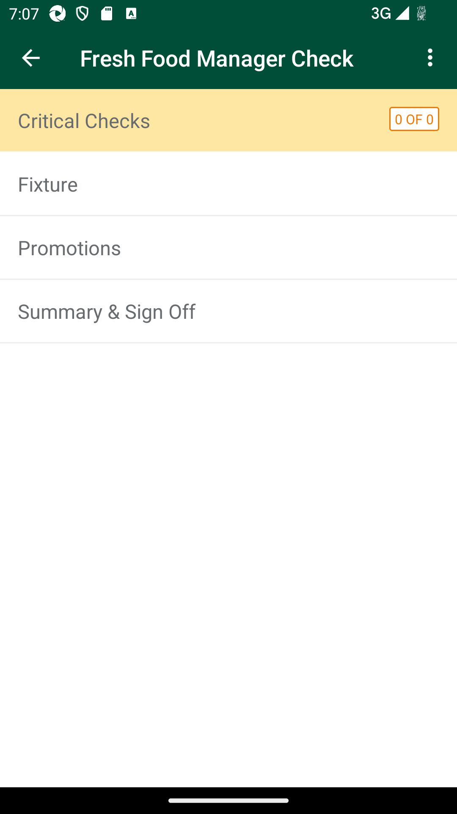
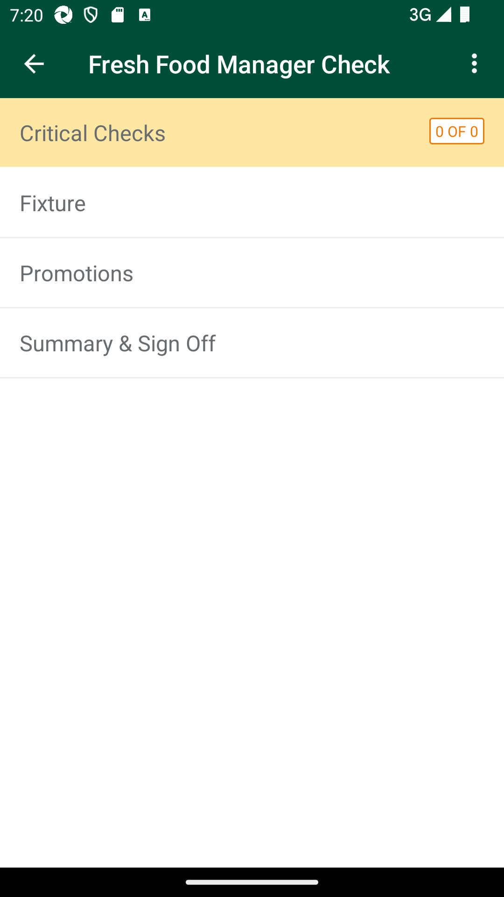
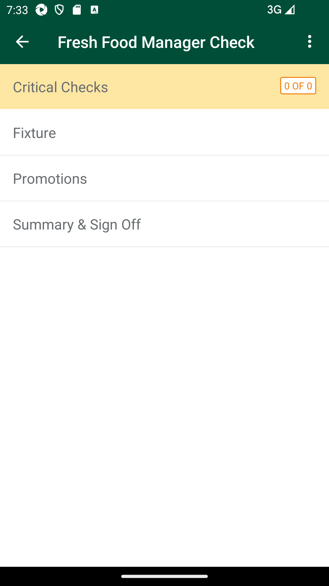
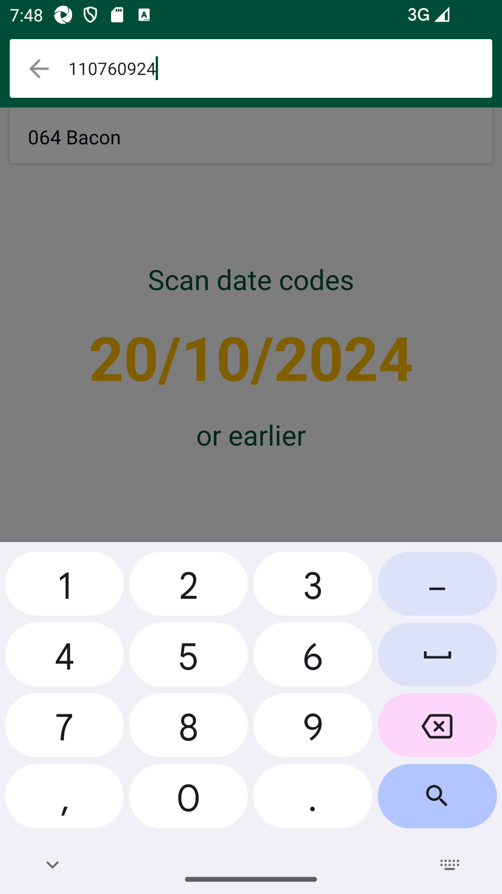
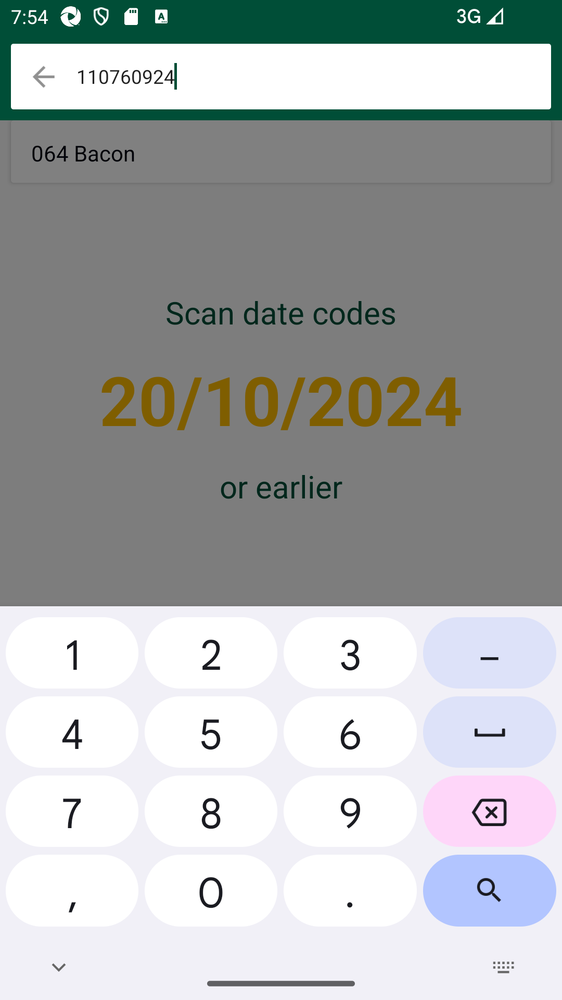
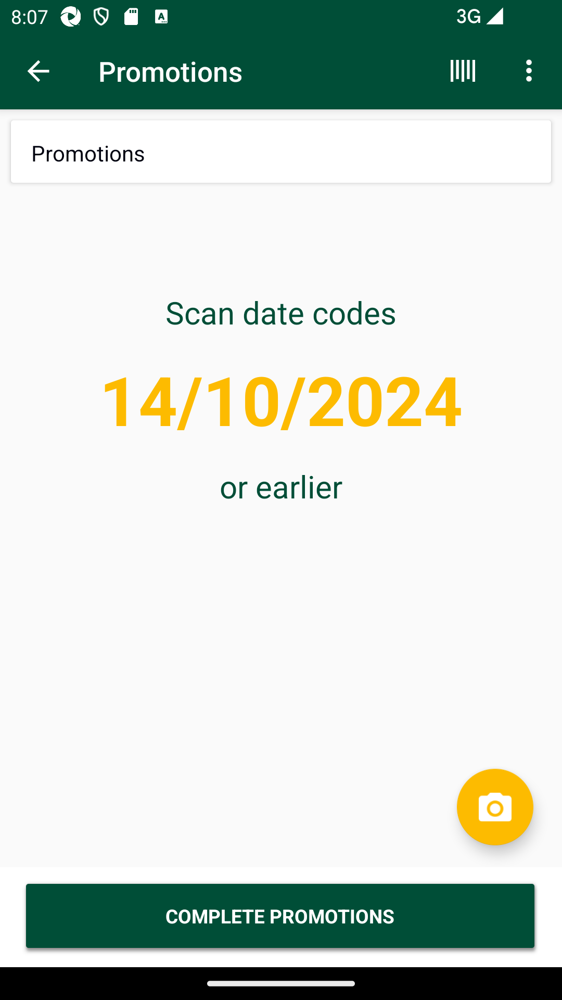
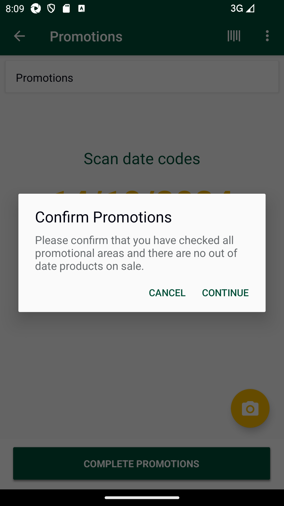
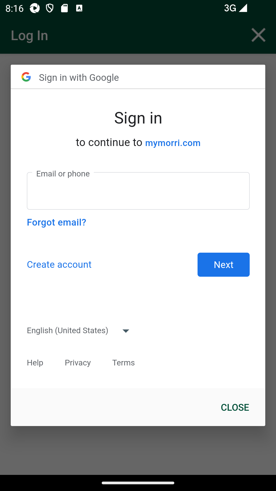
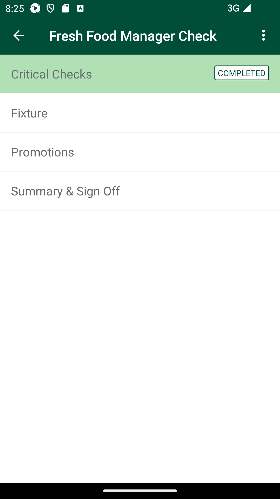

-
Verify Daily Schedule-Fresh Food Manager in Fresh code check
8:48:50 PM / 01:29:52:282 Fail
Verify Daily Schedule-Fresh Food Manager in Fresh code check
10.14.2024 8:48:50 PM 10.14.2024 10:18:43 PM 01:29:52:282 · #test-id=1@NewfccFreshFoodManager @regressionPassTO CHANGE THE DEVICE TIMINGS AS REQUIREDPassTO CHANGE THE DEVICE TIMINGS AS REQUIREDGiven I send the time "07" and mins "00" and meridiem "pm" and current date in listThen I Change timeThen I Change dateFailSMA-25033_UAT_90_When User navigates to Fresh Food Manager in defined time window (After 7:00 pm) then Sub-Menu Status will get displayed as 'Not Checked' and should be able to view list - Critical Check,Fixture,Promotion and WarehouseFailSMA-25033_UAT_90_When User navigates to Fresh Food Manager in defined time window (After 7:00 pm) then Sub-Menu Status will get displayed as 'Not Checked' and should be able to view list - Critical Check,Fixture,Promotion and WarehouseWhen I enter Username and Password for SMA Manager userAnd I click on login button for SMAThen I click on the main menu "Code Checking"Then I click on "Fresh Code Check"Then I click on "Daily Schedule"Then I Scroll down on Daily schedule pageAnd I Select Daily schedule for "Current Date"Then I click on "Fresh Food Manager Check"And I verify Critical Check,Fixture,Promotion and Warehouse are displayedcom.morrisons.common.action.Hook.afterScenario(io.cucumber.java.Scenario)FailFCC_Phase4_ UAT_03_For Fresh Food Manager Check Short life departments - In Fixture location "Markdown & Wastage" actions are displayed and "Rotate to Front" action is not displayed.FailFCC_Phase4_ UAT_03_For Fresh Food Manager Check Short life departments - In Fixture location "Markdown & Wastage" actions are displayed and "Rotate to Front" action is not displayed.When I enter Username and Password for SMA Manager userAnd I click on login button for SMAThen I click on the main menu "Code Checking"Then I click on "Fresh Code Check"Then I click on "Daily Schedule"Then I Scroll down on Daily schedule pageAnd I Select Daily schedule for "Current Date"Then I click on "Fresh Food Manager Check"And I verify Critical Check,Fixture,Promotion and Warehouse are displayedcom.morrisons.common.action.Hook.afterScenario(io.cucumber.java.Scenario)Then I click on "Fixture"Step skippedAnd I verify Aisle list is displayedStep skippedThen I click on "Aisle 0"Step skippedAnd I verify corresponding departments are displayedStep skippedThen I click on "050 Ready Meals"Step skippedThen I verify Next scan date is displayedStep skippedAnd I click on barcode entry ButtonStep skippedAnd I enter Product Min "102800789"Step skippedThen Verify "Markdown" as default action is displayedStep skippedAnd I click on action spinnerStep skippedThen Verify "Wastage" action is displayedStep skippedThen Verify "Markdown" action is displayedStep skippedThen Verify "Rotate To Front" action is not displayedStep skippedFailFCC_Phase4_ UAT_04_For Fresh Food Manager Check Short life departments - Fixture location , select "Past expiry date" and verify only 1 Wastage reason code as "Waste Out of Date" is displayed.FailFCC_Phase4_ UAT_04_For Fresh Food Manager Check Short life departments - Fixture location , select "Past expiry date" and verify only 1 Wastage reason code as "Waste Out of Date" is displayed.When I enter Username and Password for SMA Manager userAnd I click on login button for SMAThen I click on the main menu "Code Checking"Then I click on "Fresh Code Check"Then I click on "Daily Schedule"Then I Scroll down on Daily schedule pageAnd I Select Daily schedule for "Current Date"Then I click on "Fresh Food Manager Check"And I verify Critical Check,Fixture,Promotion and Warehouse are displayedcom.morrisons.common.action.Hook.afterScenario(io.cucumber.java.Scenario)
Then I click on "Fixture"Step skippedAnd I verify Aisle list is displayedStep skippedThen I click on "Aisle 0"Step skippedAnd I verify corresponding departments are displayedStep skippedThen I click on "050 Ready Meals"Step skippedThen I verify Next scan date is displayedStep skippedAnd I click on barcode entry ButtonStep skippedAnd I enter Product Min "102800789"Step skippedAnd I click on spinner to select one of the action "Wastage"Step skippedAnd I enter markdown "5" for the productStep skippedAnd I click on CalendarStep skippedThen I select next "-2" th dateStep skippedThen I click on Done ButtonStep skippedAnd I click Log ProductStep skippedThen Verify Select Reason Code templateStep skippedThen Verify Wastage reason code "Waste Out of Date" is displayedStep skippedFailFCC_Phase4_ UAT_05_For Fresh Food Manager Check Short life departments - Fixture location , select "Future expiry date" and verify only 3 Wastage reason code as "Waste Out of Date" ,"Waste Charity" and "Waste Damaged/Fruit & Veg Quality or Condition" are displayed.FailFCC_Phase4_ UAT_05_For Fresh Food Manager Check Short life departments - Fixture location , select "Future expiry date" and verify only 3 Wastage reason code as "Waste Out of Date" ,"Waste Charity" and "Waste Damaged/Fruit & Veg Quality or Condition" are displayed.When I enter Username and Password for SMA Manager userAnd I click on login button for SMAThen I click on the main menu "Code Checking"Then I click on "Fresh Code Check"Then I click on "Daily Schedule"Then I Scroll down on Daily schedule pageAnd I Select Daily schedule for "Current Date"Then I click on "Fresh Food Manager Check"And I verify Critical Check,Fixture,Promotion and Warehouse are displayedcom.morrisons.common.action.Hook.afterScenario(io.cucumber.java.Scenario)Then I click on "Fixture"Step skippedAnd I verify Aisle list is displayedStep skippedThen I click on "Aisle 0"Step skippedAnd I verify corresponding departments are displayedStep skippedThen I click on "050 Ready Meals"Step skippedThen I verify Next scan date is displayedStep skippedAnd I click on barcode entry ButtonStep skippedAnd I enter Product Min "102800789"Step skippedAnd I click on spinner to select one of the action "Wastage"Step skippedAnd I enter markdown "5" for the productStep skippedAnd I click on CalendarStep skippedThen I select next "2" th dateStep skippedThen I click on Done ButtonStep skippedAnd I click Log ProductStep skippedThen Verify Select Reason Code templateStep skippedThen Verify Wastage reason code "Waste Damaged/Fruit & Veg Quality or Condition" is displayedStep skippedThen Verify Wastage reason code "Waste Out of Date" is displayedStep skippedThen Verify Wastage reason code "Waste Charity" is displayedStep skippedFailFCC_Phase4_ UAT_8_For Fresh Food Manager Check Long life departments - In Fixture location "Markdown & Wastage" actions are displayed and "Rotate to Front" action is not displayed.FailFCC_Phase4_ UAT_8_For Fresh Food Manager Check Long life departments - In Fixture location "Markdown & Wastage" actions are displayed and "Rotate to Front" action is not displayed.When I enter Username and Password for SMA Manager userAnd I click on login button for SMAThen I click on the main menu "Code Checking"Then I click on "Fresh Code Check"Then I click on "Daily Schedule"Then I Scroll down on Daily schedule pageAnd I Select Daily schedule for "Current Date"Then I click on "Fresh Food Manager Check"And I verify Critical Check,Fixture,Promotion and Warehouse are displayedcom.morrisons.common.action.Hook.afterScenario(io.cucumber.java.Scenario)Then I click on "Fixture"Step skippedAnd I verify Aisle list is displayedStep skippedThen I click on "Aisle 0"Step skippedAnd I verify corresponding departments are displayedStep skippedThen I click on "064 Bacon"Step skippedThen I verify Next scan date is displayedStep skippedAnd I click on barcode entry ButtonStep skippedAnd I enter Product Min "108511241"Step skippedThen Verify "Markdown" as default action is displayedStep skippedAnd I click on action spinnerStep skippedThen Verify "Wastage" action is displayedStep skippedThen Verify "Markdown" action is displayedStep skippedThen Verify "Rotate To Front" action is not displayedStep skippedFailFCC_Phase4_ UAT_09_For Fresh Food Manager Check Long life departments - Fixture location , select "Past expiry date" and verify only 1 Wastage reason code as "Waste Out of Date" is displayed.FailFCC_Phase4_ UAT_09_For Fresh Food Manager Check Long life departments - Fixture location , select "Past expiry date" and verify only 1 Wastage reason code as "Waste Out of Date" is displayed.When I enter Username and Password for SMA Manager userAnd I click on login button for SMAThen I click on the main menu "Code Checking"Then I click on "Fresh Code Check"Then I click on "Daily Schedule"Then I Scroll down on Daily schedule pageAnd I Select Daily schedule for "Current Date"Then I click on "Fresh Food Manager Check"And I verify Critical Check,Fixture,Promotion and Warehouse are displayedcom.morrisons.common.action.Hook.afterScenario(io.cucumber.java.Scenario)Then I click on "Fixture"Step skippedAnd I verify Aisle list is displayedStep skippedThen I click on "Aisle 0"Step skippedAnd I verify corresponding departments are displayedStep skippedThen I click on "064 Bacon"Step skippedThen I verify Next scan date is displayedStep skippedAnd I click on barcode entry ButtonStep skippedAnd I enter Product Min "108511241"Step skippedAnd I click on spinner to select one of the action "Wastage"Step skippedAnd I enter markdown "5" for the productStep skippedAnd I click on CalendarStep skippedThen I select next "-2" th dateStep skippedThen I click on Done ButtonStep skippedAnd I click Log ProductStep skippedThen Verify Select Reason Code templateStep skippedThen Verify Wastage reason code "Waste Out of Date" is displayedStep skippedFailFCC_Phase4_ UAT_10_For Fresh Food Manager Check Long life departments - Fixture location , select "Future expiry date" and verify only 3 Wastage reason code as "Waste Out of Date" ,"Waste Charity" and "Waste Damaged/Fruit & Veg Quality or Condition" are displayed.FailFCC_Phase4_ UAT_10_For Fresh Food Manager Check Long life departments - Fixture location , select "Future expiry date" and verify only 3 Wastage reason code as "Waste Out of Date" ,"Waste Charity" and "Waste Damaged/Fruit & Veg Quality or Condition" are displayed.When I enter Username and Password for SMA Manager userAnd I click on login button for SMAThen I click on the main menu "Code Checking"Then I click on "Fresh Code Check"Then I click on "Daily Schedule"Then I Scroll down on Daily schedule pageAnd I Select Daily schedule for "Current Date"Then I click on "Fresh Food Manager Check"And I verify Critical Check,Fixture,Promotion and Warehouse are displayedcom.morrisons.common.action.Hook.afterScenario(io.cucumber.java.Scenario)Then I click on "Fixture"Step skippedAnd I verify Aisle list is displayedStep skippedThen I click on "Aisle 0"Step skippedAnd I verify corresponding departments are displayedStep skippedThen I click on "064 Bacon"Step skippedThen I verify Next scan date is displayedStep skippedAnd I click on barcode entry ButtonStep skippedAnd I enter Product Min "108511241"Step skippedAnd I click on spinner to select one of the action "Wastage"Step skippedAnd I enter markdown "5" for the productStep skippedAnd I click on CalendarStep skippedThen I select next "2" th dateStep skippedThen I click on Done ButtonStep skippedAnd I click Log ProductStep skippedThen Verify Select Reason Code templateStep skippedThen Verify Wastage reason code "Waste Damaged/Fruit & Veg Quality or Condition" is displayedStep skippedThen Verify Wastage reason code "Waste Out of Date" is displayedStep skippedThen Verify Wastage reason code "Waste Charity" is displayedStep skippedFailSMA-25033_UAT_93_When User navigates to Fresh Food Manager and scanned item at fixture location from any Scheduled department/class/Subclass then Next scan date is displayed on item scan screen and after scanning a product user is able to perform action as MarkdownFailSMA-25033_UAT_93_When User navigates to Fresh Food Manager and scanned item at fixture location from any Scheduled department/class/Subclass then Next scan date is displayed on item scan screen and after scanning a product user is able to perform action as MarkdownWhen I enter Username and Password for SMA Manager userAnd I click on login button for SMAThen I click on the main menu "Code Checking"Then I click on "Fresh Code Check"Then I click on "Daily Schedule"Then I Scroll down on Daily schedule pageAnd I Select Daily schedule for "Current Date"Then I click on "Fresh Food Manager Check"And I verify Critical Check,Fixture,Promotion and Warehouse are displayedcom.morrisons.common.action.Hook.afterScenario(io.cucumber.java.Scenario)Then I click on "Fixture"Step skippedAnd I verify Aisle list is displayedStep skippedThen I click on "Aisle 0"Step skippedAnd I verify corresponding departments are displayedStep skippedThen I click on "064 Bacon"Step skippedAnd I click on barcode entry ButtonStep skippedAnd I enter Product Min "103113622"Step skippedAnd I click on spinner to select one of the action "Markdown"Step skippedAnd I enter markdown "3" for the productStep skippedThen I click on date picker and select expiry dateStep skippedThen I click on Done ButtonStep skippedAnd I click on plus Log product button on Product detail pageStep skippedThen I click on No Printer AvailableStep skippedThen I click on Get PriceStep skippedThen I click on Add to Print QueueeStep skippedAnd I click on back buttonStep skippedThen I Verify Scanned itemm "103113622" is visible on view listStep skippedThen I Verify for Scanned itemm "103113622" action performed as "Markdowns" is visible on view listStep skippedAnd I click on View list of expiring productsStep skippedAnd I Swipe leftStep skippedThen I verify Delete icon is EnabledStep skippedThen I Delete the productStep skippedFailSMA-25033_UAT_94_When User navigates to Fresh Food Manager for Action as Wastage and user scan and select action=Wastage and expiry date as back dated(current date -1) then user should be able to select below wastage reason codes -> Waste Out of DateFailSMA-25033_UAT_94_When User navigates to Fresh Food Manager for Action as Wastage and user scan and select action=Wastage and expiry date as back dated(current date -1) then user should be able to select below wastage reason codes -> Waste Out of DateWhen I enter Username and Password for SMA Manager userAnd I click on login button for SMAThen I click on the main menu "Code Checking"Then I click on "Fresh Code Check"Then I click on "Daily Schedule"Then I Scroll down on Daily schedule pageAnd I Select Daily schedule for "Current Date"Then I click on "Fresh Food Manager Check"And I verify Critical Check,Fixture,Promotion and Warehouse are displayedcom.morrisons.common.action.Hook.afterScenario(io.cucumber.java.Scenario)
Then I click on "Fixture"Step skippedAnd I verify Aisle list is displayedStep skippedThen I click on "Aisle 0"Step skippedAnd I verify corresponding departments are displayedStep skippedThen I click on "064 Bacon"Step skippedAnd I click on barcode entry ButtonStep skippedAnd I enter Product Min "103113622"Step skippedAnd I click on spinner to select one of the action "Wastage"Step skippedAnd I enter markdown "2" for the productStep skippedAnd I click on CalendarStep skippedThen I select next "-1" th dateStep skippedThen I click on Done ButtonStep skippedAnd I click on plus Log product button on Product detail pageStep skippedThen I click on alert to select one of the option "Waste Out of Date"Step skippedAnd I click on Confirm buttonStep skippedThen I Verify Scanned itemm "103113622" is visible on view listStep skippedThen I Verify for Scanned itemm "103113622" action performed as "Wasted" is visible on view listStep skippedFailSMA-25033_UAT_94_When User navigates to Fresh Food Manager for Action as Wastage and user scan and select action=Wastage and expiry date as back dated(current date -2) then user should be able to select below wastage reason codes -> Waste Out of date.FailSMA-25033_UAT_94_When User navigates to Fresh Food Manager for Action as Wastage and user scan and select action=Wastage and expiry date as back dated(current date -2) then user should be able to select below wastage reason codes -> Waste Out of date.When I enter Username and Password for SMA Manager userAnd I click on login button for SMAThen I click on the main menu "Code Checking"Then I click on "Fresh Code Check"Then I click on "Daily Schedule"Then I Scroll down on Daily schedule pageAnd I Select Daily schedule for "Current Date"Then I click on "Fresh Food Manager Check"And I verify Critical Check,Fixture,Promotion and Warehouse are displayedcom.morrisons.common.action.Hook.afterScenario(io.cucumber.java.Scenario)Then I click on "Fixture"Step skippedAnd I verify Aisle list is displayedStep skippedThen I click on "Aisle 0"Step skippedAnd I verify corresponding departments are displayedStep skippedThen I click on "064 Bacon"Step skippedAnd I click on barcode entry ButtonStep skippedAnd I enter Product Min "103113622"Step skippedAnd I click on spinner to select one of the action "Wastage"Step skippedAnd I enter markdown "2" for the productStep skippedAnd I click on CalendarStep skippedThen I select next "-2" th dateStep skippedThen I click on Done ButtonStep skippedAnd I click on plus Log product button on Product detail pageStep skippedThen I click on alert to select one of the option "Waste Out of Date"Step skippedAnd I click on Confirm buttonStep skippedThen I Verify Scanned itemm "103113622" is visible on view listStep skippedThen I Verify for Scanned itemm "103113622" action performed as "Wasted" is visible on view listStep skippedFailSMA-25033_UAT_95_1_When User navigates to Fresh Food Manager for Action as Wastage and user scan and select action=Wastage and expiry date as current\future dated(current date +1) then user should be able to select below wastage reason codes -> Waste Damaged/Fruit & Veg Quality or Condition.FailSMA-25033_UAT_95_1_When User navigates to Fresh Food Manager for Action as Wastage and user scan and select action=Wastage and expiry date as current\future dated(current date +1) then user should be able to select below wastage reason codes -> Waste Damaged/Fruit & Veg Quality or Condition.When I enter Username and Password for SMA Manager userAnd I click on login button for SMAThen I click on the main menu "Code Checking"Then I click on "Fresh Code Check"Then I click on "Daily Schedule"Then I Scroll down on Daily schedule pageAnd I Select Daily schedule for "Current Date"Then I click on "Fresh Food Manager Check"And I verify Critical Check,Fixture,Promotion and Warehouse are displayedcom.morrisons.common.action.Hook.afterScenario(io.cucumber.java.Scenario)Then I click on "Fixture"Step skippedAnd I verify Aisle list is displayedStep skippedThen I click on "Aisle 0"Step skippedAnd I verify corresponding departments are displayedStep skippedThen I click on "064 Bacon"Step skippedAnd I click on barcode entry ButtonStep skippedAnd I enter Product Min "103113622"Step skippedAnd I click on spinner to select one of the action "Wastage"Step skippedAnd I enter markdown "2" for the productStep skippedAnd I click on CalendarStep skippedThen I select next "1" th dateStep skippedThen I click on Done ButtonStep skippedAnd I click on plus Log product button on Product detail pageStep skippedThen Verify Select Reason Code templateStep skippedAnd I verify Three wastage code options are dispayedStep skippedThen I click on alert to select one of the option "Waste Damaged/Fruit & Veg Quality or Condition"Step skippedAnd I click on Confirm buttonStep skippedThen I Verify Scanned itemm "103113622" is visible on view listStep skippedThen I Verify for Scanned itemm "103113622" action performed as "Wasted" is visible on view listStep skippedFailSMA-25033_UAT_95_2_When User navigates to Fresh Food Manager for Action as Wastage and user scan and select action=Wastage and expiry date as current\future dated(current date +1) then user should be able to select below wastage reason codes -> Waste Charity.FailSMA-25033_UAT_95_2_When User navigates to Fresh Food Manager for Action as Wastage and user scan and select action=Wastage and expiry date as current\future dated(current date +1) then user should be able to select below wastage reason codes -> Waste Charity.When I enter Username and Password for SMA Manager userAnd I click on login button for SMAThen I click on the main menu "Code Checking"Then I click on "Fresh Code Check"Then I click on "Daily Schedule"Then I Scroll down on Daily schedule pageAnd I Select Daily schedule for "Current Date"Then I click on "Fresh Food Manager Check"And I verify Critical Check,Fixture,Promotion and Warehouse are displayedcom.morrisons.common.action.Hook.afterScenario(io.cucumber.java.Scenario)Then I click on "Fixture"Step skippedAnd I verify Aisle list is displayedStep skippedThen I click on "Aisle 0"Step skippedAnd I verify corresponding departments are displayedStep skippedThen I click on "064 Bacon"Step skippedAnd I click on barcode entry ButtonStep skippedAnd I enter Product Min "103113622"Step skippedAnd I click on spinner to select one of the action "Wastage"Step skippedAnd I enter markdown "2" for the productStep skippedAnd I click on CalendarStep skippedThen I select next "1" th dateStep skippedThen I click on Done ButtonStep skippedAnd I click on plus Log product button on Product detail pageStep skippedThen Verify Select Reason Code templateStep skippedAnd I verify Three wastage code options are dispayedStep skippedThen I click on alert to select one of the option "Waste Charity"Step skippedAnd I click on Confirm buttonStep skippedThen I Verify Scanned itemm "103113622" is visible on view listStep skippedThen I Verify for Scanned itemm "103113622" action performed as "Wasted" is visible on view listStep skippedFailSMA-25033_UAT_95_3_When User navigates to Fresh Food Manager for Action as Wastage and user scan and select action=Wastage and expiry date as current\future dated(current date +1) then user should be able to select below wastage reason codes -> Waste Out of DateFailSMA-25033_UAT_95_3_When User navigates to Fresh Food Manager for Action as Wastage and user scan and select action=Wastage and expiry date as current\future dated(current date +1) then user should be able to select below wastage reason codes -> Waste Out of DateWhen I enter Username and Password for SMA Manager userAnd I click on login button for SMAThen I click on the main menu "Code Checking"Then I click on "Fresh Code Check"Then I click on "Daily Schedule"Then I Scroll down on Daily schedule pageAnd I Select Daily schedule for "Current Date"Then I click on "Fresh Food Manager Check"And I verify Critical Check,Fixture,Promotion and Warehouse are displayedcom.morrisons.common.action.Hook.afterScenario(io.cucumber.java.Scenario)
Then I click on "Fixture"Step skippedAnd I verify Aisle list is displayedStep skippedThen I click on "Aisle 0"Step skippedAnd I verify corresponding departments are displayedStep skippedThen I click on "064 Bacon"Step skippedAnd I click on barcode entry ButtonStep skippedAnd I enter Product Min "103113622"Step skippedAnd I click on spinner to select one of the action "Wastage"Step skippedAnd I enter markdown "2" for the productStep skippedAnd I click on CalendarStep skippedThen I select next "1" th dateStep skippedThen I click on Done ButtonStep skippedAnd I click on plus Log product button on Product detail pageStep skippedThen Verify Select Reason Code templateStep skippedAnd I verify Three wastage code options are dispayedStep skippedThen I click on alert to select one of the option "Waste Out of Date"Step skippedAnd I click on Confirm buttonStep skippedThen I Verify Scanned itemm "103113622" is visible on view listStep skippedThen I Verify for Scanned itemm "103113622" action performed as "Wasted" is visible on view listStep skippedFailSMA-25033_UAT_95_4_When User navigates to Fresh Food Manager for Action as Wastage and user scan and select action=Wastage and expiry date as current\future dated(current date +1) then user should be able to select below wastage reason codes -> Waste Charity.FailSMA-25033_UAT_95_4_When User navigates to Fresh Food Manager for Action as Wastage and user scan and select action=Wastage and expiry date as current\future dated(current date +1) then user should be able to select below wastage reason codes -> Waste Charity.When I enter Username and Password for SMA Manager userAnd I click on login button for SMAThen I click on the main menu "Code Checking"Then I click on "Fresh Code Check"Then I click on "Daily Schedule"Then I Scroll down on Daily schedule pageAnd I Select Daily schedule for "Current Date"Then I click on "Fresh Food Manager Check"And I verify Critical Check,Fixture,Promotion and Warehouse are displayedcom.morrisons.common.action.Hook.afterScenario(io.cucumber.java.Scenario)Then I click on "Fixture"Step skippedAnd I verify Aisle list is displayedStep skippedThen I click on "Aisle 0"Step skippedAnd I verify corresponding departments are displayedStep skippedThen I click on "064 Bacon"Step skippedAnd I click on barcode entry ButtonStep skippedAnd I enter Product Min "103113622"Step skippedAnd I click on spinner to select one of the action "Wastage"Step skippedAnd I enter markdown "2" for the productStep skippedAnd I click on CalendarStep skippedThen I select next "1" th dateStep skippedThen I click on Done ButtonStep skippedAnd I click on plus Log product button on Product detail pageStep skippedThen Verify Select Reason Code templateStep skippedAnd I verify Three wastage code options are dispayedStep skippedThen I click on alert to select one of the option "Waste Charity"Step skippedAnd I click on Confirm buttonStep skippedThen I Verify Scanned itemm "103113622" is visible on view listStep skippedThen I Verify for Scanned itemm "103113622" action performed as "Wasted" is visible on view listStep skippedFailSMA-25033_UAT_97_When User navigates to fixture location under Fresh Food Manager and user wants to delete product from the view list of scheduled department then User should be able to delete the products actioned as Markdown and the deleted item will get disappear from the list of scanned items.FailSMA-25033_UAT_97_When User navigates to fixture location under Fresh Food Manager and user wants to delete product from the view list of scheduled department then User should be able to delete the products actioned as Markdown and the deleted item will get disappear from the list of scanned items.When I enter Username and Password for SMA Manager userAnd I click on login button for SMAThen I click on the main menu "Code Checking"Then I click on "Fresh Code Check"Then I click on "Daily Schedule"Then I Scroll down on Daily schedule pageAnd I Select Daily schedule for "Current Date"Then I click on "Fresh Food Manager Check"And I verify Critical Check,Fixture,Promotion and Warehouse are displayedcom.morrisons.common.action.Hook.afterScenario(io.cucumber.java.Scenario)Then I click on "Fixture"Step skippedAnd I verify Aisle list is displayedStep skippedThen I click on "Aisle 0"Step skippedAnd I verify corresponding departments are displayedStep skippedThen I click on "064 Bacon"Step skippedAnd I click on barcode entry ButtonStep skippedAnd I enter Product Min "103113622"Step skippedAnd I click on spinner to select one of the action "Markdown"Step skippedAnd I enter markdown "2" for the productStep skippedThen I click on date picker and select expiry dateStep skippedThen I click on Done ButtonStep skippedAnd I click on plus Log product button on Product detail pageStep skippedThen I click on No Printer AvailableStep skippedAnd I click on Get PriceStep skippedThen I click on Add to Print QueueeStep skippedAnd I click on back buttonStep skippedAnd I click on View list of expiring productsStep skippedAnd I Swipe leftStep skippedThen I verify Delete icon is EnabledStep skippedThen I Delete the productStep skippedFailSMA-25033_UAT_99_When User navigates to Fixture screen under Fresh Food Manager and status of Department is completed. Then user should be able to click on "Reopen Code Rotate Group" then prompt will appear.FailSMA-25033_UAT_99_When User navigates to Fixture screen under Fresh Food Manager and status of Department is completed. Then user should be able to click on "Reopen Code Rotate Group" then prompt will appear.When I enter Username and Password for SMA Manager userAnd I click on login button for SMAThen I click on the main menu "Code Checking"Then I click on "Fresh Code Check"Then I click on "Daily Schedule"Then I Scroll down on Daily schedule pageAnd I Select Daily schedule for "Current Date"Then I click on "Fresh Food Manager Check"And I verify Critical Check,Fixture,Promotion and Warehouse are displayedcom.morrisons.common.action.Hook.afterScenario(io.cucumber.java.Scenario)Then I click on "Fixture"Step skippedAnd I verify Aisle list is displayedStep skippedThen I click on "Aisle 0"Step skippedAnd I verify corresponding departments are displayedStep skippedThen I click on "064 Bacon"Step skippedAnd I click on barcode entry ButtonStep skippedAnd I enter Product Min "103113622"Step skippedAnd I click on spinner to select one of the action "Wastage"Step skippedAnd I enter markdown "2" for the productStep skippedAnd I click on CalendarStep skippedThen I select next "1" th dateStep skippedThen I click on Done ButtonStep skippedAnd I click on plus Log product button on Product detail pageStep skippedThen Verify Select Reason Code templateStep skippedAnd I verify Three wastage code options are dispayedStep skippedThen I click on alert to select one of the option "Waste Charity"Step skippedAnd I click on Confirm buttonStep skippedThen I click on View list of expiring productsStep skippedAnd I verify Complete Code Check button is displayedStep skippedThen I click on Complete Code Check buttonStep skippedAnd I verify Rotation ratings page is displayedStep skippedThen I select rating option as "Poor"Step skippedThen I click on confirm buttonStep skippedAnd I verify "064 Bacon" status is "Completed"Step skippedThen I click on "064 Bacon"Step skippedAnd I verify Reopen Complete Code Check button is displayedStep skippedThen I click on Reopen Complete Code Check buttonStep skippedAnd I click on Yes option on Reopen Complete Code Check alertStep skippedFailSMA-25033_UAT_100_When User navigates to Fixture screen under Fresh Food Manager, after reopening respective department and performs delete operation on scanned items actioned as Markdown by swiping left on the product. Then, items must disappear from the list of Scanned items.FailSMA-25033_UAT_100_When User navigates to Fixture screen under Fresh Food Manager, after reopening respective department and performs delete operation on scanned items actioned as Markdown by swiping left on the product. Then, items must disappear from the list of Scanned items.When I enter Username and Password for SMA Manager userAnd I click on login button for SMAThen I click on the main menu "Code Checking"Then I click on "Fresh Code Check"Then I click on "Daily Schedule"Then I Scroll down on Daily schedule pageAnd I Select Daily schedule for "Current Date"Then I click on "Fresh Food Manager Check"And I verify Critical Check,Fixture,Promotion and Warehouse are displayedcom.morrisons.common.action.Hook.afterScenario(io.cucumber.java.Scenario)Then I click on "Fixture"Step skippedAnd I verify Aisle list is displayedStep skippedThen I click on "Aisle 0"Step skippedAnd I verify corresponding departments are displayedStep skippedThen I click on "064 Bacon"Step skippedAnd I click on barcode entry ButtonStep skippedAnd I enter Product Min "103113622"Step skippedAnd I click on spinner to select one of the action "Markdown"Step skippedAnd I enter markdown "2" for the productStep skippedThen I click on date picker and select expiry dateStep skippedThen I click on Done ButtonStep skippedAnd I click on plus Log product button on Product detail pageStep skippedThen I click on No Printer AvailableStep skippedAnd I click on Get PriceStep skippedThen I click on Add to Print QueueeStep skippedAnd I click on back buttonStep skippedAnd I click on View list of expiring productsStep skippedAnd I verify Complete Code Check button is displayedStep skippedThen I click on Complete Code Check buttonStep skippedAnd I verify Rotation ratings page is displayedStep skippedThen I select rating option as "Poor"Step skippedThen I click on confirm buttonStep skippedThen I verify "064 Bacon" status is "Completed"Step skippedThen I click on "064 Bacon"Step skippedAnd I verify Reopen Complete Code Check button is displayedStep skippedThen I click on Reopen Complete Code Check buttonStep skippedAnd I click on Yes option on Reopen Complete Code Check alertStep skippedAnd I click on View list of expiring productsStep skippedAnd I Swipe leftStep skippedThen I verify Delete icon is EnabledStep skippedThen I Delete the productStep skippedFailSMA-25033_UAT_101_When User navigates to Fixture screen under Fresh Food Manager and selected expiry date is 'Invalid' in Schedule.Then prompt will appear with Message and 'OK' button.FailSMA-25033_UAT_101_When User navigates to Fixture screen under Fresh Food Manager and selected expiry date is 'Invalid' in Schedule.Then prompt will appear with Message and 'OK' button.When I enter Username and Password for SMA Manager userAnd I click on login button for SMAThen I click on the main menu "Code Checking"Then I click on "Fresh Code Check"Then I click on "Daily Schedule"Then I Scroll down on Daily schedule pageAnd I Select Daily schedule for "Current Date"Then I click on "Fresh Food Manager Check"And I verify Critical Check,Fixture,Promotion and Warehouse are displayedcom.morrisons.common.action.Hook.afterScenario(io.cucumber.java.Scenario)Then I click on "Fixture"Step skippedAnd I verify Aisle list is displayedStep skippedThen I click on "Aisle 0"Step skippedAnd I verify corresponding departments are displayedStep skippedThen I click on "064 Bacon"Step skippedAnd I click on barcode entry ButtonStep skippedAnd I enter Product Min "103113622"Step skippedAnd I click on spinner to select one of the action "Markdown"Step skippedAnd I enter markdown "2" for the productStep skippedAnd I click on CalendarStep skippedThen I select next "8" th dateStep skippedThen I click on Done ButtonStep skippedAnd I click on plus Log product button on Product detail pageStep skippedThen I verify "Please enter a valid date for this product, Inline with the Scheduled Check" is displayedStep skippedFailSMA-25033_UAT_102_When User navigates to Fixture location under Fresh Food Manager and user scans a Ambient product in one of the Schedule department.Then, prompt will appear with Continue Button ,user clicks on 'Continue' button then should remain on the same department screen.FailSMA-25033_UAT_102_When User navigates to Fixture location under Fresh Food Manager and user scans a Ambient product in one of the Schedule department.Then, prompt will appear with Continue Button ,user clicks on 'Continue' button then should remain on the same department screen.When I enter Username and Password for SMA Manager userAnd I click on login button for SMAThen I click on the main menu "Code Checking"Then I click on "Fresh Code Check"Then I click on "Daily Schedule"Then I Scroll down on Daily schedule pageAnd I Select Daily schedule for "Current Date"Then I click on "Fresh Food Manager Check"Then I click on "Fixture"And I verify Aisle list is displayedThen I click on "Aisle 0"And I verify corresponding departments are displayedThen I click on "064 Bacon"And I click on barcode entry ButtonAnd I enter Product Min "100100842"com.morrisons.common.action.Hook.afterScenario(io.cucumber.java.Scenario)Then I verify after scanning Ambient product "This product is not part of Fresh Foods.Please action separately" message is displayedStep skippedFailSMA-25033_UAT_103_1_When User navigates to Fresh Food Manager and scan non-Ranged product in fixture location from any Scheduled department/class/Subclass. and select action as 'Markdown' and verify product on Critical checks screen.FailSMA-25033_UAT_103_1_When User navigates to Fresh Food Manager and scan non-Ranged product in fixture location from any Scheduled department/class/Subclass. and select action as 'Markdown' and verify product on Critical checks screen.When I enter Username and Password for SMA Manager userAnd I click on login button for SMAThen I click on the main menu "Code Checking"Then I click on "Fresh Code Check"Then I click on "Daily Schedule"Then I Scroll down on Daily schedule pageAnd I Select Daily schedule for "Current Date"Then I click on "Fresh Food Manager Check"Then I click on "Fixture"And I verify Aisle list is displayedThen I click on "Aisle 0"And I verify corresponding departments are displayedThen I click on "064 Bacon"And I click on barcode entry ButtonAnd I enter Product Min "110760924"com.morrisons.common.action.Hook.afterScenario(io.cucumber.java.Scenario)
And I click on spinner to select one of the action "Markdown"Step skippedAnd I enter markdown "2" for the productStep skippedAnd I click on CalendarStep skippedThen I select next "1" th dateStep skippedThen I click on Done ButtonStep skippedAnd I click on plus Log product button on Product detail pageStep skippedAnd I verify page is navigated to location pageStep skippedThen I enter location details and click on continueStep skippedAnd I click on Back buttonStep skippedAnd I click on Back buttonStep skippedAnd I click on Back buttonStep skippedThen I click on "Critical Checks"Step skippedThen I Verify Scanned itemm "110760924" is visible on view listStep skippedFailSMA-25033_UAT_103_3_When User navigates to Fresh Food Manager and scan non-Ranged product in fixture location from any Scheduled department/class/Subclass. click on continue button and enter location details and log the product.FailSMA-25033_UAT_103_3_When User navigates to Fresh Food Manager and scan non-Ranged product in fixture location from any Scheduled department/class/Subclass. click on continue button and enter location details and log the product.When I enter Username and Password for SMA Manager userAnd I click on login button for SMAThen I click on the main menu "Code Checking"Then I click on "Fresh Code Check"Then I click on "Daily Schedule"Then I Scroll down on Daily schedule pageAnd I Select Daily schedule for "Current Date"Then I click on "Fresh Food Manager Check"Then I click on "Fixture"And I verify Aisle list is displayedThen I click on "Aisle 0"And I verify corresponding departments are displayedThen I click on "064 Bacon"And I click on barcode entry ButtonAnd I enter Product Min "110760924"com.morrisons.common.action.Hook.afterScenario(io.cucumber.java.Scenario)And I click on spinner to select one of the action "Markdown"Step skippedAnd I enter markdown "2" for the productStep skippedAnd I click on CalendarStep skippedThen I select next "1" th dateStep skippedThen I click on Done ButtonStep skippedAnd I click on plus Log product button on Product detail pageStep skippedAnd I verify page is navigated to location pageStep skippedThen I enter location details and click on continueStep skippedAnd I click on Back buttonStep skippedAnd I click on Back buttonStep skippedAnd I click on Back buttonStep skippedThen I click on "Critical Checks"Step skippedThen I Verify Scanned itemm "110760924" is visible on view listStep skippedFailSMA-25033_UAT_103_4_When User navigates to Fresh Food Manager and scan non-Ranged product in fixture location from any Scheduled department/class/Subclass. Complete the Critical check menu.FailSMA-25033_UAT_103_4_When User navigates to Fresh Food Manager and scan non-Ranged product in fixture location from any Scheduled department/class/Subclass. Complete the Critical check menu.When I enter Username and Password for SMA Manager userAnd I click on login button for SMAThen I click on the main menu "Code Checking"Then I click on "Fresh Code Check"Then I click on "Daily Schedule"Then I Scroll down on Daily schedule pageAnd I Select Daily schedule for "Current Date"Then I click on "Fresh Food Manager Check"Then I click on "Fixture"And I verify Aisle list is displayedThen I click on "Aisle 0"And I verify corresponding departments are displayedThen I click on "064 Bacon"And I click on barcode entry ButtonAnd I enter Product Min "110760924"com.morrisons.common.action.Hook.afterScenario(io.cucumber.java.Scenario)And I click on spinner to select one of the action "Markdown"Step skippedAnd I enter markdown "2" for the productStep skippedAnd I click on CalendarStep skippedThen I select next "1" th dateStep skippedThen I click on Done ButtonStep skippedAnd I click on plus Log product button on Product detail pageStep skippedAnd I verify page is navigated to location pageStep skippedThen I enter location details and click on continueStep skippedAnd I click on Back buttonStep skippedAnd I click on Back buttonStep skippedAnd I click on Back buttonStep skippedThen I click on "Critical Checks"Step skippedThen I Verify Scanned itemm "110760924" is visible on view listStep skippedAnd I verify Complete Code Check button is displayedStep skippedThen I click on Complete Code Check buttonStep skippedAnd I click on back buttonStep skippedThen I click on "Fresh Food Manager Check"Step skippedThen I click on "Critical Checks"Step skippedAnd I click on Reopen Complete Code Check buttonStep skippedAnd I click on Yes option on Reopen Complete Code Check alertStep skippedFailSMA-25033_UAT_104_When User navigates to critical check screen under Fresh Food Manager and user performs delete operation on products actioned as Markdown. Then, the respective product must disappear from the list of critical check items and product count in critical check sub-menu should get updated.FailSMA-25033_UAT_104_When User navigates to critical check screen under Fresh Food Manager and user performs delete operation on products actioned as Markdown. Then, the respective product must disappear from the list of critical check items and product count in critical check sub-menu should get updated.When I enter Username and Password for SMA Manager userAnd I click on login button for SMAThen I click on the main menu "Code Checking"Then I click on "Fresh Code Check"Then I click on "Daily Schedule"Then I Scroll down on Daily schedule pageAnd I Select Daily schedule for "Current Date"Then I click on "Fresh Food Manager Check"Then I click on "Fixture"And I verify Aisle list is displayedThen I click on "Aisle 0"And I verify corresponding departments are displayedThen I click on "064 Bacon"And I click on barcode entry ButtonAnd I enter Product Min "110760924"com.morrisons.common.action.Hook.afterScenario(io.cucumber.java.Scenario)
And I click on spinner to select one of the action "Markdown"Step skippedAnd I enter markdown "2" for the productStep skippedAnd I click on CalendarStep skippedThen I select next "1" th dateStep skippedThen I click on Done ButtonStep skippedAnd I click on plus Log product button on Product detail pageStep skippedAnd I verify page is navigated to location pageStep skippedThen I enter location details and click on continueStep skippedAnd I click on Back buttonStep skippedAnd I click on Back buttonStep skippedAnd I click on Back buttonStep skippedThen I click on "Critical Checks"Step skippedThen I Verify Scanned itemm "110760924" is visible on view listStep skippedAnd I Swipe leftStep skippedAnd I Delete the productStep skippedFailSMA-25033_UAT_98_When User navigates to Fixture screen under Fresh Food Manager and User completes all the Aisles under Fixture location then The app will display Fixture Location status as 'completed'.FailSMA-25033_UAT_98_When User navigates to Fixture screen under Fresh Food Manager and User completes all the Aisles under Fixture location then The app will display Fixture Location status as 'completed'.When I enter Username and Password for SMA Manager userAnd I click on login button for SMAThen I click on the main menu "Code Checking"Then I click on "Fresh Code Check"Then I click on "Daily Schedule"Then I Scroll down on Daily schedule pageAnd I Select Daily schedule for "Current Date"Then I click on "Fresh Food Manager Check"And I verify Critical Check,Fixture,Promotion and Warehouse are displayedcom.morrisons.common.action.Hook.afterScenario(io.cucumber.java.Scenario)And I get "Fixture" statusStep skippedThen I click on "Fixture"Step skippedAnd I verify Aisle list is displayedStep skippedThen I complte all the AislesStep skippedAnd I click on back buttonStep skippedThen I verify "Fixture" status is "Completed"Step skippedFailUAT_105 Verify completed status in 'Critical Check' screen when Fresh Food Manager 'Complete Code Check'FailUAT_105 Verify completed status in 'Critical Check' screen when Fresh Food Manager 'Complete Code Check'When I enter Username and Password for SMA Manager userAnd I click on login button for SMAThen I click on the main menu "Code Checking"Then I click on "Fresh Code Check"Then I click on "Daily Schedule"Then I Scroll down on Daily schedule pageAnd I Select Daily schedule for "Current Date"Then I click on "Fresh Food Manager Check"Then I click on "Critical Checks"And I click on Button "COMPLETE CODE CHECK"And I verify Critical checks status "Completed"com.morrisons.common.action.Hook.afterScenario(io.cucumber.java.Scenario)FailUAT_106 Verify when status is completed, user performs 'Reopen Code Rotate Group' in 'Critical Check'FailUAT_106 Verify when status is completed, user performs 'Reopen Code Rotate Group' in 'Critical Check'When I enter Username and Password for SMA Manager userAnd I click on login button for SMAThen I click on the main menu "Code Checking"Then I click on "Fresh Code Check"Then I click on "Daily Schedule"Then I Scroll down on Daily schedule pageAnd I Select Daily schedule for "Current Date"Then I click on "Fresh Food Manager Check"And I verify Critical checks status "Completed"com.morrisons.common.action.Hook.afterScenario(io.cucumber.java.Scenario)Then I reopen department "Critical Checks"Step skippedThen I click on Back buttonStep skippedAnd I verify Critical checks status "0 OF 0"Step skippedThen I click on "Critical Checks"Step skippedAnd I click on Button "COMPLETE CODE CHECK"Step skippedFailUAT_108 Verify 'Promotion' screen when 'Markdown' action is performed for scanned productFailUAT_108 Verify 'Promotion' screen when 'Markdown' action is performed for scanned productWhen I enter Username and Password for SMA Manager userAnd I click on login button for SMAThen I click on the main menu "Code Checking"Then I click on "Fresh Code Check"Then I click on "Daily Schedule"Then I Scroll down on Daily schedule pageAnd I Select Daily schedule for "Current Date"Then I click on "Fresh Food Manager Check"Then I click on "Promotions"Then I verify Next scan date is displayedAnd I click on barcode entry ButtonThen Enter "107089869" numberAnd I click on spinner to select one of the action "Markdown"And I enter markdown "2" for the productAnd I click on CalendarThen I select next "1" th dateStep undefinedThen I click on Done ButtonStep skippedAnd I capture product detailsStep skippedAnd I click Log ProductStep skippedThen I click on No Printer AvailableStep skippedThen I click on Get PriceStep skippedThen I click on Add to Print QueueeStep skippedAnd I verify my product displayed in view listStep skippedFailUAT_111 Verify 'Promotion' screen when user 'Delete' product actioned as Markdow from view listFailUAT_111 Verify 'Promotion' screen when user 'Delete' product actioned as Markdow from view listWhen I enter Username and Password for SMA Manager userAnd I click on login button for SMAThen I click on the main menu "Code Checking"Then I click on "Fresh Code Check"Then I click on "Daily Schedule"Then I Scroll down on Daily schedule pageAnd I Select Daily schedule for "Current Date"Then I click on "Fresh Food Manager Check"Then I click on "Promotions"And I verify my product displayed in view listcom.morrisons.common.action.Hook.afterScenario(io.cucumber.java.Scenario)
And I Delete productsStep skippedFailUAT_16 Verify user give Rotation Rating for 'Warehouse' screen when user click 'Complete Promotions'FailUAT_16 Verify user give Rotation Rating for 'Warehouse' screen when user click 'Complete Promotions'When I enter Username and Password for SMA Manager userAnd I click on login button for SMAThen I click on the main menu "Code Checking"Then I click on "Fresh Code Check"Then I click on "Daily Schedule"Then I Scroll down on Daily schedule pageAnd I Select Daily schedule for "Current Date"Then I click on "Fresh Food Manager Check"Then I click on "Promotions"Then I verify Next scan date is displayedAnd I click on Button "COMPLETE PROMOTIONS"And I select rating and confirmcom.morrisons.common.action.Hook.afterScenario(io.cucumber.java.Scenario)
And I verify Counts and RatingStep skippedAnd I verify promotion status "Completed"Step skippedFailUAT_113 Verify when status is completed, user performs 'Reopen Code Rotate Group' in 'Promotion'FailUAT_113 Verify when status is completed, user performs 'Reopen Code Rotate Group' in 'Promotion'When I enter Username and Password for SMA Manager userAnd I click on login button for SMAThen I click on the main menu "Code Checking"Then I click on "Fresh Code Check"Then I click on "Daily Schedule"Then I Scroll down on Daily schedule pageAnd I Select Daily schedule for "Current Date"Then I click on "Fresh Food Manager Check"And I verify promotion status "Completed"com.morrisons.common.action.Hook.afterScenario(io.cucumber.java.Scenario)Then I click on "Promotions"Step skippedAnd I click on Button "RE-OPEN PROMOTIONS"Step skippedAnd I click ContinueStep skippedAnd I click on Button "COMPLETE PROMOTIONS"Step skippedFailUAT_114 Verify 'Warehouse' screen when 'Markdown' action is performed for scanned productFailUAT_114 Verify 'Warehouse' screen when 'Markdown' action is performed for scanned productWhen I enter Username and Password for SMA Manager userAnd I click on login button for SMAcom.morrisons.common.action.Hook.afterScenario(io.cucumber.java.Scenario)
Then I click on the main menu "Code Checking"Step skippedThen I click on "Fresh Code Check"Step skippedThen I click on "Daily Schedule"Step skippedThen I Scroll down on Daily schedule pageStep skippedAnd I Select Daily schedule for "Current Date"Step skippedThen I click on "Fresh Food Manager Check"Step skippedThen I click on "Warehouse"Step skippedThen I verify Next scan date is displayedStep skippedAnd I click on barcode entry ButtonStep skippedThen Enter "107091248" numberStep skippedAnd I click on spinner to select one of the action "Markdown"Step skippedAnd I enter markdown "2" for the productStep skippedAnd I click on CalendarStep skippedThen I select next "1" th dateStep skippedThen I click on Done ButtonStep skippedAnd I capture product detailsStep skippedAnd I click Log ProductStep skippedThen I click on No Printer AvailableStep skippedThen I click on Get PriceStep skippedThen I click on Add to Print QueueeStep skippedAnd I verify my product displayed in view listStep skippedFailUAT_115 Verify 'Warehouse' screen when 'Wastage' action is performed for scanned product for future expiry dateFailUAT_115 Verify 'Warehouse' screen when 'Wastage' action is performed for scanned product for future expiry dateWhen I enter Username and Password for SMA Manager userAnd I click on login button for SMAThen I click on the main menu "Code Checking"Then I click on "Fresh Code Check"Then I click on "Daily Schedule"Then I Scroll down on Daily schedule pageAnd I Select Daily schedule for "Current Date"Then I click on "Fresh Food Manager Check"Then I click on "Warehouse"com.morrisons.common.action.Hook.afterScenario(io.cucumber.java.Scenario)And I click on barcode entry ButtonStep skippedThen Enter "107091248" numberStep skippedAnd I click on spinner to select one of the action "Wastage"Step skippedAnd I enter markdown "2" for the productStep skippedAnd I click on CalendarStep skippedThen I select next "4" th dateStep skippedThen I click on Done ButtonStep skippedAnd I capture product detailsStep skippedAnd I click Log ProductStep skippedThen Verify Select Reason Code templateStep skippedThen Verify Select Reason Code as Waste Damaged Fruit & Veg Quality or Condition, Waste Out of date ,Waste CharityStep skippedAnd I select "Waste Out of Date" and ConfirmStep skippedAnd I verify my product displayed in view listStep skippedFailUAT_116 Verify 'Warehouse' screen when 'Wastage' action is performed for scanned product for past expiry dateFailUAT_116 Verify 'Warehouse' screen when 'Wastage' action is performed for scanned product for past expiry dateWhen I enter Username and Password for SMA Manager userAnd I click on login button for SMAThen I click on the main menu "Code Checking"Then I click on "Fresh Code Check"Then I click on "Daily Schedule"Then I Scroll down on Daily schedule pageAnd I Select Daily schedule for "Current Date"Then I click on "Fresh Food Manager Check"Then I click on "Warehouse"com.morrisons.common.action.Hook.afterScenario(io.cucumber.java.Scenario)And I click on barcode entry ButtonStep skippedThen Enter "107091248" numberStep skippedAnd I click on spinner to select one of the action "Wastage"Step skippedAnd I enter markdown "2" for the productStep skippedAnd I click on CalendarStep skippedThen I select next "-2" th dateStep skippedThen I click on Done ButtonStep skippedAnd I capture product detailsStep skippedAnd I click Log ProductStep skippedThen Verify Select Reason Code templateStep skippedThen Verify Select Reason Code as Waste Damaged Fruit & Veg Quality or Condition, Waste Out of date ,Waste CharityStep skippedAnd I select "Waste Out of Date" and ConfirmStep skippedAnd I verify my product displayed in view listStep skippedFailUAT_117 Verify 'Warehouse' screen when user 'Delete' product actioned as Markdow from view listFailUAT_117 Verify 'Warehouse' screen when user 'Delete' product actioned as Markdow from view listWhen I enter Username and Password for SMA Manager userAnd I click on login button for SMAThen I click on the main menu "Code Checking"Then I click on "Fresh Code Check"Then I click on "Daily Schedule"Then I Scroll down on Daily schedule pageAnd I Select Daily schedule for "Current Date"Then I click on "Fresh Food Manager Check"Then I click on "Warehouse"com.morrisons.common.action.Hook.afterScenario(io.cucumber.java.Scenario)And I verify my product displayed in view listStep skippedAnd I Delete productsStep skippedGiven Request is made to SMA app login service for manager userStep skippedThen Service should return details for SMA app Login ServiceStep skippedAnd Get generated access tokenStep skippedGiven Get request is made to GetMarkdown Details service for store id "8" and product id "107091248"Step skippedAnd Get Operation perform on Markdown service requestStep skippedThen Get markdown details service response after scanning the productStep skippedGiven Patch request is made to delete print list service for store id "8"Step skippedThen Patch Operation perform on Markdown service requestStep skippedFailUAT_17 Verify user give Rotation Rating for 'Warehouse' screen when user click 'Complete Promotions'FailUAT_17 Verify user give Rotation Rating for 'Warehouse' screen when user click 'Complete Promotions'When I enter Username and Password for SMA Manager userAnd I click on login button for SMAThen I click on the main menu "Code Checking"Then I click on "Fresh Code Check"Then I click on "Daily Schedule"Then I Scroll down on Daily schedule pageAnd I Select Daily schedule for "Current Date"Then I click on "Fresh Food Manager Check"Then I click on "Warehouse"com.morrisons.common.action.Hook.afterScenario(io.cucumber.java.Scenario)
Then I verify Next scan date is displayedStep skippedAnd I click on Button "COMPLETE WAREHOUSE"Step skippedAnd I select rating and confirmStep skippedAnd I verify Counts and RatingStep skippedAnd I verify warehouse status "Completed"Step skippedFailUAT_119 Verify when status is completed, user performs 'Reopen Code Rotate Group' in 'Warehouse'FailUAT_119 Verify when status is completed, user performs 'Reopen Code Rotate Group' in 'Warehouse'When I enter Username and Password for SMA Manager userAnd I click on login button for SMAThen I click on the main menu "Code Checking"Then I click on "Fresh Code Check"Then I click on "Daily Schedule"Then I Scroll down on Daily schedule pageAnd I Select Daily schedule for "Current Date"Then I click on "Fresh Food Manager Check"And I verify warehouse status "Completed"com.morrisons.common.action.Hook.afterScenario(io.cucumber.java.Scenario)Then I click on "Warehouse"Step skippedAnd I click on Button "RE-OPEN WAREHOUSE"Step skippedAnd I click ContinueStep skippedAnd I click on Button "COMPLETE WAREHOUSE"Step skipped
-
org.openqa.selenium.WebDriverException
5 tests
org.openqa.selenium.WebDriverException
5 failedStatus Timestamp TestName Fail 21:36:17 PM And I enter Product Min "100100842" Verify Daily Schedule-Fresh Food Manager in Fresh code check.SMA-25033_UAT_102_When User navigates to Fixture location under Fresh Food Manager and user scans a Ambient product in one of the Schedule department.Then, prompt will appear with Continue Button ,user clicks on 'Continue' button then should remain on the same department screen..And I enter Product Min "100100842"Fail 21:38:33 PM And I enter Product Min "110760924" Verify Daily Schedule-Fresh Food Manager in Fresh code check.SMA-25033_UAT_103_1_When User navigates to Fresh Food Manager and scan non-Ranged product in fixture location from any Scheduled department/class/Subclass. and select action as 'Markdown' and verify product on Critical checks screen..And I enter Product Min "110760924"Fail 21:40:49 PM And I enter Product Min "110760924" Verify Daily Schedule-Fresh Food Manager in Fresh code check.SMA-25033_UAT_103_3_When User navigates to Fresh Food Manager and scan non-Ranged product in fixture location from any Scheduled department/class/Subclass. click on continue button and enter location details and log the product..And I enter Product Min "110760924"Fail 21:43:05 PM And I enter Product Min "110760924" Verify Daily Schedule-Fresh Food Manager in Fresh code check.SMA-25033_UAT_103_4_When User navigates to Fresh Food Manager and scan non-Ranged product in fixture location from any Scheduled department/class/Subclass. Complete the Critical check menu..And I enter Product Min "110760924"Fail 21:45:19 PM And I enter Product Min "110760924" Verify Daily Schedule-Fresh Food Manager in Fresh code check.SMA-25033_UAT_104_When User navigates to critical check screen under Fresh Food Manager and user performs delete operation on products actioned as Markdown. Then, the respective product must disappear from the list of critical check items and product count in critical check sub-menu should get updated..And I enter Product Min "110760924" -
org.openqa.selenium.NoSuchElementException
28 tests
org.openqa.selenium.NoSuchElementException
28 failedStatus Timestamp TestName Fail 20:53:04 PM And I verify Critical Check,Fixture,Promotion and Warehouse are displayed Verify Daily Schedule-Fresh Food Manager in Fresh code check.SMA-25033_UAT_90_When User navigates to Fresh Food Manager in defined time window (After 7:00 pm) then Sub-Menu Status will get displayed as 'Not Checked' and should be able to view list - Critical Check,Fixture,Promotion and Warehouse.And I verify Critical Check,Fixture,Promotion and Warehouse are displayedFail 20:55:16 PM And I verify Critical Check,Fixture,Promotion and Warehouse are displayed Verify Daily Schedule-Fresh Food Manager in Fresh code check.FCC_Phase4_ UAT_03_For Fresh Food Manager Check Short life departments - In Fixture location "Markdown & Wastage" actions are displayed and "Rotate to Front" action is not displayed..And I verify Critical Check,Fixture,Promotion and Warehouse are displayedFail 20:57:35 PM And I verify Critical Check,Fixture,Promotion and Warehouse are displayed Verify Daily Schedule-Fresh Food Manager in Fresh code check.FCC_Phase4_ UAT_04_For Fresh Food Manager Check Short life departments - Fixture location , select "Past expiry date" and verify only 1 Wastage reason code as "Waste Out of Date" is displayed..And I verify Critical Check,Fixture,Promotion and Warehouse are displayedFail 20:59:44 PM And I verify Critical Check,Fixture,Promotion and Warehouse are displayed Verify Daily Schedule-Fresh Food Manager in Fresh code check.FCC_Phase4_ UAT_05_For Fresh Food Manager Check Short life departments - Fixture location , select "Future expiry date" and verify only 3 Wastage reason code as "Waste Out of Date" ,"Waste Charity" and "Waste Damaged/Fruit & Veg Quality or Condition" are displayed..And I verify Critical Check,Fixture,Promotion and Warehouse are displayedFail 21:01:55 PM And I verify Critical Check,Fixture,Promotion and Warehouse are displayed Verify Daily Schedule-Fresh Food Manager in Fresh code check.FCC_Phase4_ UAT_8_For Fresh Food Manager Check Long life departments - In Fixture location "Markdown & Wastage" actions are displayed and "Rotate to Front" action is not displayed..And I verify Critical Check,Fixture,Promotion and Warehouse are displayedFail 21:04:13 PM And I verify Critical Check,Fixture,Promotion and Warehouse are displayed Verify Daily Schedule-Fresh Food Manager in Fresh code check.FCC_Phase4_ UAT_09_For Fresh Food Manager Check Long life departments - Fixture location , select "Past expiry date" and verify only 1 Wastage reason code as "Waste Out of Date" is displayed..And I verify Critical Check,Fixture,Promotion and Warehouse are displayedFail 21:06:21 PM And I verify Critical Check,Fixture,Promotion and Warehouse are displayed Verify Daily Schedule-Fresh Food Manager in Fresh code check.FCC_Phase4_ UAT_10_For Fresh Food Manager Check Long life departments - Fixture location , select "Future expiry date" and verify only 3 Wastage reason code as "Waste Out of Date" ,"Waste Charity" and "Waste Damaged/Fruit & Veg Quality or Condition" are displayed..And I verify Critical Check,Fixture,Promotion and Warehouse are displayedFail 21:08:30 PM And I verify Critical Check,Fixture,Promotion and Warehouse are displayed Verify Daily Schedule-Fresh Food Manager in Fresh code check.SMA-25033_UAT_93_When User navigates to Fresh Food Manager and scanned item at fixture location from any Scheduled department/class/Subclass then Next scan date is displayed on item scan screen and after scanning a product user is able to perform action as Markdown.And I verify Critical Check,Fixture,Promotion and Warehouse are displayedFail 21:10:48 PM And I verify Critical Check,Fixture,Promotion and Warehouse are displayed Verify Daily Schedule-Fresh Food Manager in Fresh code check.SMA-25033_UAT_94_When User navigates to Fresh Food Manager for Action as Wastage and user scan and select action=Wastage and expiry date as back dated(current date -1) then user should be able to select below wastage reason codes -> Waste Out of Date.And I verify Critical Check,Fixture,Promotion and Warehouse are displayedFail 21:14:58 PM And I verify Critical Check,Fixture,Promotion and Warehouse are displayed Verify Daily Schedule-Fresh Food Manager in Fresh code check.SMA-25033_UAT_94_When User navigates to Fresh Food Manager for Action as Wastage and user scan and select action=Wastage and expiry date as back dated(current date -2) then user should be able to select below wastage reason codes -> Waste Out of date..And I verify Critical Check,Fixture,Promotion and Warehouse are displayedFail 21:17:18 PM And I verify Critical Check,Fixture,Promotion and Warehouse are displayed Verify Daily Schedule-Fresh Food Manager in Fresh code check.SMA-25033_UAT_95_1_When User navigates to Fresh Food Manager for Action as Wastage and user scan and select action=Wastage and expiry date as current\future dated(current date +1) then user should be able to select below wastage reason codes -> Waste Damaged/Fruit & Veg Quality or Condition..And I verify Critical Check,Fixture,Promotion and Warehouse are displayedFail 21:21:10 PM And I verify Critical Check,Fixture,Promotion and Warehouse are displayed Verify Daily Schedule-Fresh Food Manager in Fresh code check.SMA-25033_UAT_95_2_When User navigates to Fresh Food Manager for Action as Wastage and user scan and select action=Wastage and expiry date as current\future dated(current date +1) then user should be able to select below wastage reason codes -> Waste Charity..And I verify Critical Check,Fixture,Promotion and Warehouse are displayedFail 21:23:22 PM And I verify Critical Check,Fixture,Promotion and Warehouse are displayed Verify Daily Schedule-Fresh Food Manager in Fresh code check.SMA-25033_UAT_95_3_When User navigates to Fresh Food Manager for Action as Wastage and user scan and select action=Wastage and expiry date as current\future dated(current date +1) then user should be able to select below wastage reason codes -> Waste Out of Date.And I verify Critical Check,Fixture,Promotion and Warehouse are displayedFail 21:25:28 PM And I verify Critical Check,Fixture,Promotion and Warehouse are displayed Verify Daily Schedule-Fresh Food Manager in Fresh code check.SMA-25033_UAT_95_4_When User navigates to Fresh Food Manager for Action as Wastage and user scan and select action=Wastage and expiry date as current\future dated(current date +1) then user should be able to select below wastage reason codes -> Waste Charity..And I verify Critical Check,Fixture,Promotion and Warehouse are displayedFail 21:27:32 PM And I verify Critical Check,Fixture,Promotion and Warehouse are displayed Verify Daily Schedule-Fresh Food Manager in Fresh code check.SMA-25033_UAT_97_When User navigates to fixture location under Fresh Food Manager and user wants to delete product from the view list of scheduled department then User should be able to delete the products actioned as Markdown and the deleted item will get disappear from the list of scanned items..And I verify Critical Check,Fixture,Promotion and Warehouse are displayedFail 21:29:36 PM And I verify Critical Check,Fixture,Promotion and Warehouse are displayed Verify Daily Schedule-Fresh Food Manager in Fresh code check.SMA-25033_UAT_99_When User navigates to Fixture screen under Fresh Food Manager and status of Department is completed. Then user should be able to click on "Reopen Code Rotate Group" then prompt will appear..And I verify Critical Check,Fixture,Promotion and Warehouse are displayedFail 21:31:46 PM And I verify Critical Check,Fixture,Promotion and Warehouse are displayed Verify Daily Schedule-Fresh Food Manager in Fresh code check.SMA-25033_UAT_100_When User navigates to Fixture screen under Fresh Food Manager, after reopening respective department and performs delete operation on scanned items actioned as Markdown by swiping left on the product. Then, items must disappear from the list of Scanned items..And I verify Critical Check,Fixture,Promotion and Warehouse are displayedFail 21:33:56 PM And I verify Critical Check,Fixture,Promotion and Warehouse are displayed Verify Daily Schedule-Fresh Food Manager in Fresh code check.SMA-25033_UAT_101_When User navigates to Fixture screen under Fresh Food Manager and selected expiry date is 'Invalid' in Schedule.Then prompt will appear with Message and 'OK' button..And I verify Critical Check,Fixture,Promotion and Warehouse are displayedFail 21:48:22 PM And I verify Critical Check,Fixture,Promotion and Warehouse are displayed Verify Daily Schedule-Fresh Food Manager in Fresh code check.SMA-25033_UAT_98_When User navigates to Fixture screen under Fresh Food Manager and User completes all the Aisles under Fixture location then The app will display Fixture Location status as 'completed'..And I verify Critical Check,Fixture,Promotion and Warehouse are displayedFail 21:57:40 PM And I verify my product displayed in view list Verify Daily Schedule-Fresh Food Manager in Fresh code check.UAT_111 Verify 'Promotion' screen when user 'Delete' product actioned as Markdow from view list.And I verify my product displayed in view listFail 22:00:04 PM And I select rating and confirm Verify Daily Schedule-Fresh Food Manager in Fresh code check.UAT_16 Verify user give Rotation Rating for 'Warehouse' screen when user click 'Complete Promotions'.And I select rating and confirmFail 22:02:09 PM And I verify promotion status "Completed" Verify Daily Schedule-Fresh Food Manager in Fresh code check.UAT_113 Verify when status is completed, user performs 'Reopen Code Rotate Group' in 'Promotion'.And I verify promotion status "Completed"Fail 22:03:25 PM And I click on login button for SMA Verify Daily Schedule-Fresh Food Manager in Fresh code check.UAT_114 Verify 'Warehouse' screen when 'Markdown' action is performed for scanned product.And I click on login button for SMAFail 22:08:50 PM Then I click on "Warehouse" Verify Daily Schedule-Fresh Food Manager in Fresh code check.UAT_115 Verify 'Warehouse' screen when 'Wastage' action is performed for scanned product for future expiry date.Then I click on "Warehouse"Fail 22:11:08 PM Then I click on "Warehouse" Verify Daily Schedule-Fresh Food Manager in Fresh code check.UAT_116 Verify 'Warehouse' screen when 'Wastage' action is performed for scanned product for past expiry date.Then I click on "Warehouse"Fail 22:13:43 PM Then I click on "Warehouse" Verify Daily Schedule-Fresh Food Manager in Fresh code check.UAT_117 Verify 'Warehouse' screen when user 'Delete' product actioned as Markdow from view list.Then I click on "Warehouse"Fail 22:16:07 PM Then I click on "Warehouse" Verify Daily Schedule-Fresh Food Manager in Fresh code check.UAT_17 Verify user give Rotation Rating for 'Warehouse' screen when user click 'Complete Promotions'.Then I click on "Warehouse"Fail 22:18:32 PM And I verify warehouse status "Completed" Verify Daily Schedule-Fresh Food Manager in Fresh code check.UAT_119 Verify when status is completed, user performs 'Reopen Code Rotate Group' in 'Warehouse'.And I verify warehouse status "Completed" -
java.lang.AssertionError
2 tests
java.lang.AssertionError
2 failedStatus Timestamp TestName Fail 21:50:47 PM And I verify Critical checks status "Completed" Verify Daily Schedule-Fresh Food Manager in Fresh code check.UAT_105 Verify completed status in 'Critical Check' screen when Fresh Food Manager 'Complete Code Check'.And I verify Critical checks status "Completed"Fail 21:52:49 PM And I verify Critical checks status "Completed" Verify Daily Schedule-Fresh Food Manager in Fresh code check.UAT_106 Verify when status is completed, user performs 'Reopen Code Rotate Group' in 'Critical Check'.And I verify Critical checks status "Completed"
-
@NewfccFreshFoodManager
38 tests
@NewfccFreshFoodManager
1 passed 37 failedStatus Timestamp TestName Fail 20:48:50 PM Verify Daily Schedule-Fresh Food Manager in Fresh code check Pass 20:48:50 PM TO CHANGE THE DEVICE TIMINGS AS REQUIRED Verify Daily Schedule-Fresh Food Manager in Fresh code check.TO CHANGE THE DEVICE TIMINGS AS REQUIREDFail 20:51:23 PM SMA-25033_UAT_90_When User navigates to Fresh Food Manager in defined time window (After 7:00 pm) then Sub-Menu Status will get displayed as 'Not Checked' and should be able to view list - Critical Check,Fixture,Promotion and Warehouse Verify Daily Schedule-Fresh Food Manager in Fresh code check.SMA-25033_UAT_90_When User navigates to Fresh Food Manager in defined time window (After 7:00 pm) then Sub-Menu Status will get displayed as 'Not Checked' and should be able to view list - Critical Check,Fixture,Promotion and WarehouseFail 20:53:36 PM FCC_Phase4_ UAT_03_For Fresh Food Manager Check Short life departments - In Fixture location "Markdown & Wastage" actions are displayed and "Rotate to Front" action is not displayed. Verify Daily Schedule-Fresh Food Manager in Fresh code check.FCC_Phase4_ UAT_03_For Fresh Food Manager Check Short life departments - In Fixture location "Markdown & Wastage" actions are displayed and "Rotate to Front" action is not displayed.Fail 20:55:46 PM FCC_Phase4_ UAT_04_For Fresh Food Manager Check Short life departments - Fixture location , select "Past expiry date" and verify only 1 Wastage reason code as "Waste Out of Date" is displayed. Verify Daily Schedule-Fresh Food Manager in Fresh code check.FCC_Phase4_ UAT_04_For Fresh Food Manager Check Short life departments - Fixture location , select "Past expiry date" and verify only 1 Wastage reason code as "Waste Out of Date" is displayed.Fail 20:58:03 PM FCC_Phase4_ UAT_05_For Fresh Food Manager Check Short life departments - Fixture location , select "Future expiry date" and verify only 3 Wastage reason code as "Waste Out of Date" ,"Waste Charity" and "Waste Damaged/Fruit & Veg Quality or Condition" are displayed. Verify Daily Schedule-Fresh Food Manager in Fresh code check.FCC_Phase4_ UAT_05_For Fresh Food Manager Check Short life departments - Fixture location , select "Future expiry date" and verify only 3 Wastage reason code as "Waste Out of Date" ,"Waste Charity" and "Waste Damaged/Fruit & Veg Quality or Condition" are displayed.Fail 21:00:15 PM FCC_Phase4_ UAT_8_For Fresh Food Manager Check Long life departments - In Fixture location "Markdown & Wastage" actions are displayed and "Rotate to Front" action is not displayed. Verify Daily Schedule-Fresh Food Manager in Fresh code check.FCC_Phase4_ UAT_8_For Fresh Food Manager Check Long life departments - In Fixture location "Markdown & Wastage" actions are displayed and "Rotate to Front" action is not displayed.Fail 21:02:28 PM FCC_Phase4_ UAT_09_For Fresh Food Manager Check Long life departments - Fixture location , select "Past expiry date" and verify only 1 Wastage reason code as "Waste Out of Date" is displayed. Verify Daily Schedule-Fresh Food Manager in Fresh code check.FCC_Phase4_ UAT_09_For Fresh Food Manager Check Long life departments - Fixture location , select "Past expiry date" and verify only 1 Wastage reason code as "Waste Out of Date" is displayed.Fail 21:04:42 PM FCC_Phase4_ UAT_10_For Fresh Food Manager Check Long life departments - Fixture location , select "Future expiry date" and verify only 3 Wastage reason code as "Waste Out of Date" ,"Waste Charity" and "Waste Damaged/Fruit & Veg Quality or Condition" are displayed. Verify Daily Schedule-Fresh Food Manager in Fresh code check.FCC_Phase4_ UAT_10_For Fresh Food Manager Check Long life departments - Fixture location , select "Future expiry date" and verify only 3 Wastage reason code as "Waste Out of Date" ,"Waste Charity" and "Waste Damaged/Fruit & Veg Quality or Condition" are displayed.Fail 21:06:50 PM SMA-25033_UAT_93_When User navigates to Fresh Food Manager and scanned item at fixture location from any Scheduled department/class/Subclass then Next scan date is displayed on item scan screen and after scanning a product user is able to perform action as Markdown Verify Daily Schedule-Fresh Food Manager in Fresh code check.SMA-25033_UAT_93_When User navigates to Fresh Food Manager and scanned item at fixture location from any Scheduled department/class/Subclass then Next scan date is displayed on item scan screen and after scanning a product user is able to perform action as MarkdownFail 21:09:00 PM SMA-25033_UAT_94_When User navigates to Fresh Food Manager for Action as Wastage and user scan and select action=Wastage and expiry date as back dated(current date -1) then user should be able to select below wastage reason codes -> Waste Out of Date Verify Daily Schedule-Fresh Food Manager in Fresh code check.SMA-25033_UAT_94_When User navigates to Fresh Food Manager for Action as Wastage and user scan and select action=Wastage and expiry date as back dated(current date -1) then user should be able to select below wastage reason codes -> Waste Out of DateFail 21:11:17 PM SMA-25033_UAT_94_When User navigates to Fresh Food Manager for Action as Wastage and user scan and select action=Wastage and expiry date as back dated(current date -2) then user should be able to select below wastage reason codes -> Waste Out of date. Verify Daily Schedule-Fresh Food Manager in Fresh code check.SMA-25033_UAT_94_When User navigates to Fresh Food Manager for Action as Wastage and user scan and select action=Wastage and expiry date as back dated(current date -2) then user should be able to select below wastage reason codes -> Waste Out of date.Fail 21:15:28 PM SMA-25033_UAT_95_1_When User navigates to Fresh Food Manager for Action as Wastage and user scan and select action=Wastage and expiry date as current\future dated(current date +1) then user should be able to select below wastage reason codes -> Waste Damaged/Fruit & Veg Quality or Condition. Verify Daily Schedule-Fresh Food Manager in Fresh code check.SMA-25033_UAT_95_1_When User navigates to Fresh Food Manager for Action as Wastage and user scan and select action=Wastage and expiry date as current\future dated(current date +1) then user should be able to select below wastage reason codes -> Waste Damaged/Fruit & Veg Quality or Condition.Fail 21:17:47 PM SMA-25033_UAT_95_2_When User navigates to Fresh Food Manager for Action as Wastage and user scan and select action=Wastage and expiry date as current\future dated(current date +1) then user should be able to select below wastage reason codes -> Waste Charity. Verify Daily Schedule-Fresh Food Manager in Fresh code check.SMA-25033_UAT_95_2_When User navigates to Fresh Food Manager for Action as Wastage and user scan and select action=Wastage and expiry date as current\future dated(current date +1) then user should be able to select below wastage reason codes -> Waste Charity.Fail 21:21:38 PM SMA-25033_UAT_95_3_When User navigates to Fresh Food Manager for Action as Wastage and user scan and select action=Wastage and expiry date as current\future dated(current date +1) then user should be able to select below wastage reason codes -> Waste Out of Date Verify Daily Schedule-Fresh Food Manager in Fresh code check.SMA-25033_UAT_95_3_When User navigates to Fresh Food Manager for Action as Wastage and user scan and select action=Wastage and expiry date as current\future dated(current date +1) then user should be able to select below wastage reason codes -> Waste Out of DateFail 21:23:50 PM SMA-25033_UAT_95_4_When User navigates to Fresh Food Manager for Action as Wastage and user scan and select action=Wastage and expiry date as current\future dated(current date +1) then user should be able to select below wastage reason codes -> Waste Charity. Verify Daily Schedule-Fresh Food Manager in Fresh code check.SMA-25033_UAT_95_4_When User navigates to Fresh Food Manager for Action as Wastage and user scan and select action=Wastage and expiry date as current\future dated(current date +1) then user should be able to select below wastage reason codes -> Waste Charity.Fail 21:25:56 PM SMA-25033_UAT_97_When User navigates to fixture location under Fresh Food Manager and user wants to delete product from the view list of scheduled department then User should be able to delete the products actioned as Markdown and the deleted item will get disappear from the list of scanned items. Verify Daily Schedule-Fresh Food Manager in Fresh code check.SMA-25033_UAT_97_When User navigates to fixture location under Fresh Food Manager and user wants to delete product from the view list of scheduled department then User should be able to delete the products actioned as Markdown and the deleted item will get disappear from the list of scanned items.Fail 21:28:00 PM SMA-25033_UAT_99_When User navigates to Fixture screen under Fresh Food Manager and status of Department is completed. Then user should be able to click on "Reopen Code Rotate Group" then prompt will appear. Verify Daily Schedule-Fresh Food Manager in Fresh code check.SMA-25033_UAT_99_When User navigates to Fixture screen under Fresh Food Manager and status of Department is completed. Then user should be able to click on "Reopen Code Rotate Group" then prompt will appear.Fail 21:30:04 PM SMA-25033_UAT_100_When User navigates to Fixture screen under Fresh Food Manager, after reopening respective department and performs delete operation on scanned items actioned as Markdown by swiping left on the product. Then, items must disappear from the list of Scanned items. Verify Daily Schedule-Fresh Food Manager in Fresh code check.SMA-25033_UAT_100_When User navigates to Fixture screen under Fresh Food Manager, after reopening respective department and performs delete operation on scanned items actioned as Markdown by swiping left on the product. Then, items must disappear from the list of Scanned items.Fail 21:32:14 PM SMA-25033_UAT_101_When User navigates to Fixture screen under Fresh Food Manager and selected expiry date is 'Invalid' in Schedule.Then prompt will appear with Message and 'OK' button. Verify Daily Schedule-Fresh Food Manager in Fresh code check.SMA-25033_UAT_101_When User navigates to Fixture screen under Fresh Food Manager and selected expiry date is 'Invalid' in Schedule.Then prompt will appear with Message and 'OK' button.Fail 21:34:24 PM SMA-25033_UAT_102_When User navigates to Fixture location under Fresh Food Manager and user scans a Ambient product in one of the Schedule department.Then, prompt will appear with Continue Button ,user clicks on 'Continue' button then should remain on the same department screen. Verify Daily Schedule-Fresh Food Manager in Fresh code check.SMA-25033_UAT_102_When User navigates to Fixture location under Fresh Food Manager and user scans a Ambient product in one of the Schedule department.Then, prompt will appear with Continue Button ,user clicks on 'Continue' button then should remain on the same department screen.Fail 21:36:40 PM SMA-25033_UAT_103_1_When User navigates to Fresh Food Manager and scan non-Ranged product in fixture location from any Scheduled department/class/Subclass. and select action as 'Markdown' and verify product on Critical checks screen. Verify Daily Schedule-Fresh Food Manager in Fresh code check.SMA-25033_UAT_103_1_When User navigates to Fresh Food Manager and scan non-Ranged product in fixture location from any Scheduled department/class/Subclass. and select action as 'Markdown' and verify product on Critical checks screen.Fail 21:38:56 PM SMA-25033_UAT_103_3_When User navigates to Fresh Food Manager and scan non-Ranged product in fixture location from any Scheduled department/class/Subclass. click on continue button and enter location details and log the product. Verify Daily Schedule-Fresh Food Manager in Fresh code check.SMA-25033_UAT_103_3_When User navigates to Fresh Food Manager and scan non-Ranged product in fixture location from any Scheduled department/class/Subclass. click on continue button and enter location details and log the product.Fail 21:41:12 PM SMA-25033_UAT_103_4_When User navigates to Fresh Food Manager and scan non-Ranged product in fixture location from any Scheduled department/class/Subclass. Complete the Critical check menu. Verify Daily Schedule-Fresh Food Manager in Fresh code check.SMA-25033_UAT_103_4_When User navigates to Fresh Food Manager and scan non-Ranged product in fixture location from any Scheduled department/class/Subclass. Complete the Critical check menu.Fail 21:43:29 PM SMA-25033_UAT_104_When User navigates to critical check screen under Fresh Food Manager and user performs delete operation on products actioned as Markdown. Then, the respective product must disappear from the list of critical check items and product count in critical check sub-menu should get updated. Verify Daily Schedule-Fresh Food Manager in Fresh code check.SMA-25033_UAT_104_When User navigates to critical check screen under Fresh Food Manager and user performs delete operation on products actioned as Markdown. Then, the respective product must disappear from the list of critical check items and product count in critical check sub-menu should get updated.Fail 21:45:42 PM SMA-25033_UAT_98_When User navigates to Fixture screen under Fresh Food Manager and User completes all the Aisles under Fixture location then The app will display Fixture Location status as 'completed'. Verify Daily Schedule-Fresh Food Manager in Fresh code check.SMA-25033_UAT_98_When User navigates to Fixture screen under Fresh Food Manager and User completes all the Aisles under Fixture location then The app will display Fixture Location status as 'completed'.Fail 21:48:52 PM UAT_105 Verify completed status in 'Critical Check' screen when Fresh Food Manager 'Complete Code Check' Verify Daily Schedule-Fresh Food Manager in Fresh code check.UAT_105 Verify completed status in 'Critical Check' screen when Fresh Food Manager 'Complete Code Check'Fail 21:51:09 PM UAT_106 Verify when status is completed, user performs 'Reopen Code Rotate Group' in 'Critical Check' Verify Daily Schedule-Fresh Food Manager in Fresh code check.UAT_106 Verify when status is completed, user performs 'Reopen Code Rotate Group' in 'Critical Check'Fail 21:53:10 PM UAT_108 Verify 'Promotion' screen when 'Markdown' action is performed for scanned product Verify Daily Schedule-Fresh Food Manager in Fresh code check.UAT_108 Verify 'Promotion' screen when 'Markdown' action is performed for scanned productFail 21:55:57 PM UAT_111 Verify 'Promotion' screen when user 'Delete' product actioned as Markdow from view list Verify Daily Schedule-Fresh Food Manager in Fresh code check.UAT_111 Verify 'Promotion' screen when user 'Delete' product actioned as Markdow from view listFail 21:58:12 PM UAT_16 Verify user give Rotation Rating for 'Warehouse' screen when user click 'Complete Promotions' Verify Daily Schedule-Fresh Food Manager in Fresh code check.UAT_16 Verify user give Rotation Rating for 'Warehouse' screen when user click 'Complete Promotions'Fail 22:00:28 PM UAT_113 Verify when status is completed, user performs 'Reopen Code Rotate Group' in 'Promotion' Verify Daily Schedule-Fresh Food Manager in Fresh code check.UAT_113 Verify when status is completed, user performs 'Reopen Code Rotate Group' in 'Promotion'Fail 22:02:40 PM UAT_114 Verify 'Warehouse' screen when 'Markdown' action is performed for scanned product Verify Daily Schedule-Fresh Food Manager in Fresh code check.UAT_114 Verify 'Warehouse' screen when 'Markdown' action is performed for scanned productFail 22:07:08 PM UAT_115 Verify 'Warehouse' screen when 'Wastage' action is performed for scanned product for future expiry date Verify Daily Schedule-Fresh Food Manager in Fresh code check.UAT_115 Verify 'Warehouse' screen when 'Wastage' action is performed for scanned product for future expiry dateFail 22:09:28 PM UAT_116 Verify 'Warehouse' screen when 'Wastage' action is performed for scanned product for past expiry date Verify Daily Schedule-Fresh Food Manager in Fresh code check.UAT_116 Verify 'Warehouse' screen when 'Wastage' action is performed for scanned product for past expiry dateFail 22:11:50 PM UAT_117 Verify 'Warehouse' screen when user 'Delete' product actioned as Markdow from view list Verify Daily Schedule-Fresh Food Manager in Fresh code check.UAT_117 Verify 'Warehouse' screen when user 'Delete' product actioned as Markdow from view listFail 22:14:22 PM UAT_17 Verify user give Rotation Rating for 'Warehouse' screen when user click 'Complete Promotions' Verify Daily Schedule-Fresh Food Manager in Fresh code check.UAT_17 Verify user give Rotation Rating for 'Warehouse' screen when user click 'Complete Promotions'Fail 22:16:47 PM UAT_119 Verify when status is completed, user performs 'Reopen Code Rotate Group' in 'Warehouse' Verify Daily Schedule-Fresh Food Manager in Fresh code check.UAT_119 Verify when status is completed, user performs 'Reopen Code Rotate Group' in 'Warehouse' -
@regression
38 tests
@regression
1 passed 37 failedStatus Timestamp TestName Fail 20:48:50 PM Verify Daily Schedule-Fresh Food Manager in Fresh code check Pass 20:48:50 PM TO CHANGE THE DEVICE TIMINGS AS REQUIRED Verify Daily Schedule-Fresh Food Manager in Fresh code check.TO CHANGE THE DEVICE TIMINGS AS REQUIREDFail 20:51:23 PM SMA-25033_UAT_90_When User navigates to Fresh Food Manager in defined time window (After 7:00 pm) then Sub-Menu Status will get displayed as 'Not Checked' and should be able to view list - Critical Check,Fixture,Promotion and Warehouse Verify Daily Schedule-Fresh Food Manager in Fresh code check.SMA-25033_UAT_90_When User navigates to Fresh Food Manager in defined time window (After 7:00 pm) then Sub-Menu Status will get displayed as 'Not Checked' and should be able to view list - Critical Check,Fixture,Promotion and WarehouseFail 20:53:36 PM FCC_Phase4_ UAT_03_For Fresh Food Manager Check Short life departments - In Fixture location "Markdown & Wastage" actions are displayed and "Rotate to Front" action is not displayed. Verify Daily Schedule-Fresh Food Manager in Fresh code check.FCC_Phase4_ UAT_03_For Fresh Food Manager Check Short life departments - In Fixture location "Markdown & Wastage" actions are displayed and "Rotate to Front" action is not displayed.Fail 20:55:46 PM FCC_Phase4_ UAT_04_For Fresh Food Manager Check Short life departments - Fixture location , select "Past expiry date" and verify only 1 Wastage reason code as "Waste Out of Date" is displayed. Verify Daily Schedule-Fresh Food Manager in Fresh code check.FCC_Phase4_ UAT_04_For Fresh Food Manager Check Short life departments - Fixture location , select "Past expiry date" and verify only 1 Wastage reason code as "Waste Out of Date" is displayed.Fail 20:58:03 PM FCC_Phase4_ UAT_05_For Fresh Food Manager Check Short life departments - Fixture location , select "Future expiry date" and verify only 3 Wastage reason code as "Waste Out of Date" ,"Waste Charity" and "Waste Damaged/Fruit & Veg Quality or Condition" are displayed. Verify Daily Schedule-Fresh Food Manager in Fresh code check.FCC_Phase4_ UAT_05_For Fresh Food Manager Check Short life departments - Fixture location , select "Future expiry date" and verify only 3 Wastage reason code as "Waste Out of Date" ,"Waste Charity" and "Waste Damaged/Fruit & Veg Quality or Condition" are displayed.Fail 21:00:15 PM FCC_Phase4_ UAT_8_For Fresh Food Manager Check Long life departments - In Fixture location "Markdown & Wastage" actions are displayed and "Rotate to Front" action is not displayed. Verify Daily Schedule-Fresh Food Manager in Fresh code check.FCC_Phase4_ UAT_8_For Fresh Food Manager Check Long life departments - In Fixture location "Markdown & Wastage" actions are displayed and "Rotate to Front" action is not displayed.Fail 21:02:28 PM FCC_Phase4_ UAT_09_For Fresh Food Manager Check Long life departments - Fixture location , select "Past expiry date" and verify only 1 Wastage reason code as "Waste Out of Date" is displayed. Verify Daily Schedule-Fresh Food Manager in Fresh code check.FCC_Phase4_ UAT_09_For Fresh Food Manager Check Long life departments - Fixture location , select "Past expiry date" and verify only 1 Wastage reason code as "Waste Out of Date" is displayed.Fail 21:04:42 PM FCC_Phase4_ UAT_10_For Fresh Food Manager Check Long life departments - Fixture location , select "Future expiry date" and verify only 3 Wastage reason code as "Waste Out of Date" ,"Waste Charity" and "Waste Damaged/Fruit & Veg Quality or Condition" are displayed. Verify Daily Schedule-Fresh Food Manager in Fresh code check.FCC_Phase4_ UAT_10_For Fresh Food Manager Check Long life departments - Fixture location , select "Future expiry date" and verify only 3 Wastage reason code as "Waste Out of Date" ,"Waste Charity" and "Waste Damaged/Fruit & Veg Quality or Condition" are displayed.Fail 21:06:50 PM SMA-25033_UAT_93_When User navigates to Fresh Food Manager and scanned item at fixture location from any Scheduled department/class/Subclass then Next scan date is displayed on item scan screen and after scanning a product user is able to perform action as Markdown Verify Daily Schedule-Fresh Food Manager in Fresh code check.SMA-25033_UAT_93_When User navigates to Fresh Food Manager and scanned item at fixture location from any Scheduled department/class/Subclass then Next scan date is displayed on item scan screen and after scanning a product user is able to perform action as MarkdownFail 21:09:00 PM SMA-25033_UAT_94_When User navigates to Fresh Food Manager for Action as Wastage and user scan and select action=Wastage and expiry date as back dated(current date -1) then user should be able to select below wastage reason codes -> Waste Out of Date Verify Daily Schedule-Fresh Food Manager in Fresh code check.SMA-25033_UAT_94_When User navigates to Fresh Food Manager for Action as Wastage and user scan and select action=Wastage and expiry date as back dated(current date -1) then user should be able to select below wastage reason codes -> Waste Out of DateFail 21:11:17 PM SMA-25033_UAT_94_When User navigates to Fresh Food Manager for Action as Wastage and user scan and select action=Wastage and expiry date as back dated(current date -2) then user should be able to select below wastage reason codes -> Waste Out of date. Verify Daily Schedule-Fresh Food Manager in Fresh code check.SMA-25033_UAT_94_When User navigates to Fresh Food Manager for Action as Wastage and user scan and select action=Wastage and expiry date as back dated(current date -2) then user should be able to select below wastage reason codes -> Waste Out of date.Fail 21:15:28 PM SMA-25033_UAT_95_1_When User navigates to Fresh Food Manager for Action as Wastage and user scan and select action=Wastage and expiry date as current\future dated(current date +1) then user should be able to select below wastage reason codes -> Waste Damaged/Fruit & Veg Quality or Condition. Verify Daily Schedule-Fresh Food Manager in Fresh code check.SMA-25033_UAT_95_1_When User navigates to Fresh Food Manager for Action as Wastage and user scan and select action=Wastage and expiry date as current\future dated(current date +1) then user should be able to select below wastage reason codes -> Waste Damaged/Fruit & Veg Quality or Condition.Fail 21:17:47 PM SMA-25033_UAT_95_2_When User navigates to Fresh Food Manager for Action as Wastage and user scan and select action=Wastage and expiry date as current\future dated(current date +1) then user should be able to select below wastage reason codes -> Waste Charity. Verify Daily Schedule-Fresh Food Manager in Fresh code check.SMA-25033_UAT_95_2_When User navigates to Fresh Food Manager for Action as Wastage and user scan and select action=Wastage and expiry date as current\future dated(current date +1) then user should be able to select below wastage reason codes -> Waste Charity.Fail 21:21:38 PM SMA-25033_UAT_95_3_When User navigates to Fresh Food Manager for Action as Wastage and user scan and select action=Wastage and expiry date as current\future dated(current date +1) then user should be able to select below wastage reason codes -> Waste Out of Date Verify Daily Schedule-Fresh Food Manager in Fresh code check.SMA-25033_UAT_95_3_When User navigates to Fresh Food Manager for Action as Wastage and user scan and select action=Wastage and expiry date as current\future dated(current date +1) then user should be able to select below wastage reason codes -> Waste Out of DateFail 21:23:50 PM SMA-25033_UAT_95_4_When User navigates to Fresh Food Manager for Action as Wastage and user scan and select action=Wastage and expiry date as current\future dated(current date +1) then user should be able to select below wastage reason codes -> Waste Charity. Verify Daily Schedule-Fresh Food Manager in Fresh code check.SMA-25033_UAT_95_4_When User navigates to Fresh Food Manager for Action as Wastage and user scan and select action=Wastage and expiry date as current\future dated(current date +1) then user should be able to select below wastage reason codes -> Waste Charity.Fail 21:25:56 PM SMA-25033_UAT_97_When User navigates to fixture location under Fresh Food Manager and user wants to delete product from the view list of scheduled department then User should be able to delete the products actioned as Markdown and the deleted item will get disappear from the list of scanned items. Verify Daily Schedule-Fresh Food Manager in Fresh code check.SMA-25033_UAT_97_When User navigates to fixture location under Fresh Food Manager and user wants to delete product from the view list of scheduled department then User should be able to delete the products actioned as Markdown and the deleted item will get disappear from the list of scanned items.Fail 21:28:00 PM SMA-25033_UAT_99_When User navigates to Fixture screen under Fresh Food Manager and status of Department is completed. Then user should be able to click on "Reopen Code Rotate Group" then prompt will appear. Verify Daily Schedule-Fresh Food Manager in Fresh code check.SMA-25033_UAT_99_When User navigates to Fixture screen under Fresh Food Manager and status of Department is completed. Then user should be able to click on "Reopen Code Rotate Group" then prompt will appear.Fail 21:30:04 PM SMA-25033_UAT_100_When User navigates to Fixture screen under Fresh Food Manager, after reopening respective department and performs delete operation on scanned items actioned as Markdown by swiping left on the product. Then, items must disappear from the list of Scanned items. Verify Daily Schedule-Fresh Food Manager in Fresh code check.SMA-25033_UAT_100_When User navigates to Fixture screen under Fresh Food Manager, after reopening respective department and performs delete operation on scanned items actioned as Markdown by swiping left on the product. Then, items must disappear from the list of Scanned items.Fail 21:32:14 PM SMA-25033_UAT_101_When User navigates to Fixture screen under Fresh Food Manager and selected expiry date is 'Invalid' in Schedule.Then prompt will appear with Message and 'OK' button. Verify Daily Schedule-Fresh Food Manager in Fresh code check.SMA-25033_UAT_101_When User navigates to Fixture screen under Fresh Food Manager and selected expiry date is 'Invalid' in Schedule.Then prompt will appear with Message and 'OK' button.Fail 21:34:24 PM SMA-25033_UAT_102_When User navigates to Fixture location under Fresh Food Manager and user scans a Ambient product in one of the Schedule department.Then, prompt will appear with Continue Button ,user clicks on 'Continue' button then should remain on the same department screen. Verify Daily Schedule-Fresh Food Manager in Fresh code check.SMA-25033_UAT_102_When User navigates to Fixture location under Fresh Food Manager and user scans a Ambient product in one of the Schedule department.Then, prompt will appear with Continue Button ,user clicks on 'Continue' button then should remain on the same department screen.Fail 21:36:40 PM SMA-25033_UAT_103_1_When User navigates to Fresh Food Manager and scan non-Ranged product in fixture location from any Scheduled department/class/Subclass. and select action as 'Markdown' and verify product on Critical checks screen. Verify Daily Schedule-Fresh Food Manager in Fresh code check.SMA-25033_UAT_103_1_When User navigates to Fresh Food Manager and scan non-Ranged product in fixture location from any Scheduled department/class/Subclass. and select action as 'Markdown' and verify product on Critical checks screen.Fail 21:38:56 PM SMA-25033_UAT_103_3_When User navigates to Fresh Food Manager and scan non-Ranged product in fixture location from any Scheduled department/class/Subclass. click on continue button and enter location details and log the product. Verify Daily Schedule-Fresh Food Manager in Fresh code check.SMA-25033_UAT_103_3_When User navigates to Fresh Food Manager and scan non-Ranged product in fixture location from any Scheduled department/class/Subclass. click on continue button and enter location details and log the product.Fail 21:41:12 PM SMA-25033_UAT_103_4_When User navigates to Fresh Food Manager and scan non-Ranged product in fixture location from any Scheduled department/class/Subclass. Complete the Critical check menu. Verify Daily Schedule-Fresh Food Manager in Fresh code check.SMA-25033_UAT_103_4_When User navigates to Fresh Food Manager and scan non-Ranged product in fixture location from any Scheduled department/class/Subclass. Complete the Critical check menu.Fail 21:43:29 PM SMA-25033_UAT_104_When User navigates to critical check screen under Fresh Food Manager and user performs delete operation on products actioned as Markdown. Then, the respective product must disappear from the list of critical check items and product count in critical check sub-menu should get updated. Verify Daily Schedule-Fresh Food Manager in Fresh code check.SMA-25033_UAT_104_When User navigates to critical check screen under Fresh Food Manager and user performs delete operation on products actioned as Markdown. Then, the respective product must disappear from the list of critical check items and product count in critical check sub-menu should get updated.Fail 21:45:42 PM SMA-25033_UAT_98_When User navigates to Fixture screen under Fresh Food Manager and User completes all the Aisles under Fixture location then The app will display Fixture Location status as 'completed'. Verify Daily Schedule-Fresh Food Manager in Fresh code check.SMA-25033_UAT_98_When User navigates to Fixture screen under Fresh Food Manager and User completes all the Aisles under Fixture location then The app will display Fixture Location status as 'completed'.Fail 21:48:52 PM UAT_105 Verify completed status in 'Critical Check' screen when Fresh Food Manager 'Complete Code Check' Verify Daily Schedule-Fresh Food Manager in Fresh code check.UAT_105 Verify completed status in 'Critical Check' screen when Fresh Food Manager 'Complete Code Check'Fail 21:51:09 PM UAT_106 Verify when status is completed, user performs 'Reopen Code Rotate Group' in 'Critical Check' Verify Daily Schedule-Fresh Food Manager in Fresh code check.UAT_106 Verify when status is completed, user performs 'Reopen Code Rotate Group' in 'Critical Check'Fail 21:53:10 PM UAT_108 Verify 'Promotion' screen when 'Markdown' action is performed for scanned product Verify Daily Schedule-Fresh Food Manager in Fresh code check.UAT_108 Verify 'Promotion' screen when 'Markdown' action is performed for scanned productFail 21:55:57 PM UAT_111 Verify 'Promotion' screen when user 'Delete' product actioned as Markdow from view list Verify Daily Schedule-Fresh Food Manager in Fresh code check.UAT_111 Verify 'Promotion' screen when user 'Delete' product actioned as Markdow from view listFail 21:58:12 PM UAT_16 Verify user give Rotation Rating for 'Warehouse' screen when user click 'Complete Promotions' Verify Daily Schedule-Fresh Food Manager in Fresh code check.UAT_16 Verify user give Rotation Rating for 'Warehouse' screen when user click 'Complete Promotions'Fail 22:00:28 PM UAT_113 Verify when status is completed, user performs 'Reopen Code Rotate Group' in 'Promotion' Verify Daily Schedule-Fresh Food Manager in Fresh code check.UAT_113 Verify when status is completed, user performs 'Reopen Code Rotate Group' in 'Promotion'Fail 22:02:40 PM UAT_114 Verify 'Warehouse' screen when 'Markdown' action is performed for scanned product Verify Daily Schedule-Fresh Food Manager in Fresh code check.UAT_114 Verify 'Warehouse' screen when 'Markdown' action is performed for scanned productFail 22:07:08 PM UAT_115 Verify 'Warehouse' screen when 'Wastage' action is performed for scanned product for future expiry date Verify Daily Schedule-Fresh Food Manager in Fresh code check.UAT_115 Verify 'Warehouse' screen when 'Wastage' action is performed for scanned product for future expiry dateFail 22:09:28 PM UAT_116 Verify 'Warehouse' screen when 'Wastage' action is performed for scanned product for past expiry date Verify Daily Schedule-Fresh Food Manager in Fresh code check.UAT_116 Verify 'Warehouse' screen when 'Wastage' action is performed for scanned product for past expiry dateFail 22:11:50 PM UAT_117 Verify 'Warehouse' screen when user 'Delete' product actioned as Markdow from view list Verify Daily Schedule-Fresh Food Manager in Fresh code check.UAT_117 Verify 'Warehouse' screen when user 'Delete' product actioned as Markdow from view listFail 22:14:22 PM UAT_17 Verify user give Rotation Rating for 'Warehouse' screen when user click 'Complete Promotions' Verify Daily Schedule-Fresh Food Manager in Fresh code check.UAT_17 Verify user give Rotation Rating for 'Warehouse' screen when user click 'Complete Promotions'Fail 22:16:47 PM UAT_119 Verify when status is completed, user performs 'Reopen Code Rotate Group' in 'Warehouse' Verify Daily Schedule-Fresh Food Manager in Fresh code check.UAT_119 Verify when status is completed, user performs 'Reopen Code Rotate Group' in 'Warehouse' -
@timeChange
2 tests
@timeChange
2 passedStatus Timestamp TestName Pass 20:48:50 PM TO CHANGE THE DEVICE TIMINGS AS REQUIRED Verify Daily Schedule-Fresh Food Manager in Fresh code check.TO CHANGE THE DEVICE TIMINGS AS REQUIREDPass 20:48:50 PM TO CHANGE THE DEVICE TIMINGS AS REQUIRED Verify Daily Schedule-Fresh Food Manager in Fresh code check.TO CHANGE THE DEVICE TIMINGS AS REQUIRED -
@SubMenuStatus
2 tests
@SubMenuStatus
2 failedStatus Timestamp TestName Fail 20:51:23 PM SMA-25033_UAT_90_When User navigates to Fresh Food Manager in defined time window (After 7:00 pm) then Sub-Menu Status will get displayed as 'Not Checked' and should be able to view list - Critical Check,Fixture,Promotion and Warehouse Verify Daily Schedule-Fresh Food Manager in Fresh code check.SMA-25033_UAT_90_When User navigates to Fresh Food Manager in defined time window (After 7:00 pm) then Sub-Menu Status will get displayed as 'Not Checked' and should be able to view list - Critical Check,Fixture,Promotion and WarehouseFail 20:51:23 PM SMA-25033_UAT_90_When User navigates to Fresh Food Manager in defined time window (After 7:00 pm) then Sub-Menu Status will get displayed as 'Not Checked' and should be able to view list - Critical Check,Fixture,Promotion and Warehouse Verify Daily Schedule-Fresh Food Manager in Fresh code check.SMA-25033_UAT_90_When User navigates to Fresh Food Manager in defined time window (After 7:00 pm) then Sub-Menu Status will get displayed as 'Not Checked' and should be able to view list - Critical Check,Fixture,Promotion and Warehouse -
@sma
72 tests
@sma
72 failedStatus Timestamp TestName Fail 20:51:23 PM SMA-25033_UAT_90_When User navigates to Fresh Food Manager in defined time window (After 7:00 pm) then Sub-Menu Status will get displayed as 'Not Checked' and should be able to view list - Critical Check,Fixture,Promotion and Warehouse Verify Daily Schedule-Fresh Food Manager in Fresh code check.SMA-25033_UAT_90_When User navigates to Fresh Food Manager in defined time window (After 7:00 pm) then Sub-Menu Status will get displayed as 'Not Checked' and should be able to view list - Critical Check,Fixture,Promotion and WarehouseFail 20:51:23 PM SMA-25033_UAT_90_When User navigates to Fresh Food Manager in defined time window (After 7:00 pm) then Sub-Menu Status will get displayed as 'Not Checked' and should be able to view list - Critical Check,Fixture,Promotion and Warehouse Verify Daily Schedule-Fresh Food Manager in Fresh code check.SMA-25033_UAT_90_When User navigates to Fresh Food Manager in defined time window (After 7:00 pm) then Sub-Menu Status will get displayed as 'Not Checked' and should be able to view list - Critical Check,Fixture,Promotion and WarehouseFail 20:53:35 PM FCC_Phase4_ UAT_03_For Fresh Food Manager Check Short life departments - In Fixture location "Markdown & Wastage" actions are displayed and "Rotate to Front" action is not displayed. Verify Daily Schedule-Fresh Food Manager in Fresh code check.FCC_Phase4_ UAT_03_For Fresh Food Manager Check Short life departments - In Fixture location "Markdown & Wastage" actions are displayed and "Rotate to Front" action is not displayed.Fail 20:53:36 PM FCC_Phase4_ UAT_03_For Fresh Food Manager Check Short life departments - In Fixture location "Markdown & Wastage" actions are displayed and "Rotate to Front" action is not displayed. Verify Daily Schedule-Fresh Food Manager in Fresh code check.FCC_Phase4_ UAT_03_For Fresh Food Manager Check Short life departments - In Fixture location "Markdown & Wastage" actions are displayed and "Rotate to Front" action is not displayed.Fail 20:55:46 PM FCC_Phase4_ UAT_04_For Fresh Food Manager Check Short life departments - Fixture location , select "Past expiry date" and verify only 1 Wastage reason code as "Waste Out of Date" is displayed. Verify Daily Schedule-Fresh Food Manager in Fresh code check.FCC_Phase4_ UAT_04_For Fresh Food Manager Check Short life departments - Fixture location , select "Past expiry date" and verify only 1 Wastage reason code as "Waste Out of Date" is displayed.Fail 20:55:46 PM FCC_Phase4_ UAT_04_For Fresh Food Manager Check Short life departments - Fixture location , select "Past expiry date" and verify only 1 Wastage reason code as "Waste Out of Date" is displayed. Verify Daily Schedule-Fresh Food Manager in Fresh code check.FCC_Phase4_ UAT_04_For Fresh Food Manager Check Short life departments - Fixture location , select "Past expiry date" and verify only 1 Wastage reason code as "Waste Out of Date" is displayed.Fail 20:58:03 PM FCC_Phase4_ UAT_05_For Fresh Food Manager Check Short life departments - Fixture location , select "Future expiry date" and verify only 3 Wastage reason code as "Waste Out of Date" ,"Waste Charity" and "Waste Damaged/Fruit & Veg Quality or Condition" are displayed. Verify Daily Schedule-Fresh Food Manager in Fresh code check.FCC_Phase4_ UAT_05_For Fresh Food Manager Check Short life departments - Fixture location , select "Future expiry date" and verify only 3 Wastage reason code as "Waste Out of Date" ,"Waste Charity" and "Waste Damaged/Fruit & Veg Quality or Condition" are displayed.Fail 20:58:03 PM FCC_Phase4_ UAT_05_For Fresh Food Manager Check Short life departments - Fixture location , select "Future expiry date" and verify only 3 Wastage reason code as "Waste Out of Date" ,"Waste Charity" and "Waste Damaged/Fruit & Veg Quality or Condition" are displayed. Verify Daily Schedule-Fresh Food Manager in Fresh code check.FCC_Phase4_ UAT_05_For Fresh Food Manager Check Short life departments - Fixture location , select "Future expiry date" and verify only 3 Wastage reason code as "Waste Out of Date" ,"Waste Charity" and "Waste Damaged/Fruit & Veg Quality or Condition" are displayed.Fail 21:00:15 PM FCC_Phase4_ UAT_8_For Fresh Food Manager Check Long life departments - In Fixture location "Markdown & Wastage" actions are displayed and "Rotate to Front" action is not displayed. Verify Daily Schedule-Fresh Food Manager in Fresh code check.FCC_Phase4_ UAT_8_For Fresh Food Manager Check Long life departments - In Fixture location "Markdown & Wastage" actions are displayed and "Rotate to Front" action is not displayed.Fail 21:00:15 PM FCC_Phase4_ UAT_8_For Fresh Food Manager Check Long life departments - In Fixture location "Markdown & Wastage" actions are displayed and "Rotate to Front" action is not displayed. Verify Daily Schedule-Fresh Food Manager in Fresh code check.FCC_Phase4_ UAT_8_For Fresh Food Manager Check Long life departments - In Fixture location "Markdown & Wastage" actions are displayed and "Rotate to Front" action is not displayed.Fail 21:02:28 PM FCC_Phase4_ UAT_09_For Fresh Food Manager Check Long life departments - Fixture location , select "Past expiry date" and verify only 1 Wastage reason code as "Waste Out of Date" is displayed. Verify Daily Schedule-Fresh Food Manager in Fresh code check.FCC_Phase4_ UAT_09_For Fresh Food Manager Check Long life departments - Fixture location , select "Past expiry date" and verify only 1 Wastage reason code as "Waste Out of Date" is displayed.Fail 21:02:28 PM FCC_Phase4_ UAT_09_For Fresh Food Manager Check Long life departments - Fixture location , select "Past expiry date" and verify only 1 Wastage reason code as "Waste Out of Date" is displayed. Verify Daily Schedule-Fresh Food Manager in Fresh code check.FCC_Phase4_ UAT_09_For Fresh Food Manager Check Long life departments - Fixture location , select "Past expiry date" and verify only 1 Wastage reason code as "Waste Out of Date" is displayed.Fail 21:04:42 PM FCC_Phase4_ UAT_10_For Fresh Food Manager Check Long life departments - Fixture location , select "Future expiry date" and verify only 3 Wastage reason code as "Waste Out of Date" ,"Waste Charity" and "Waste Damaged/Fruit & Veg Quality or Condition" are displayed. Verify Daily Schedule-Fresh Food Manager in Fresh code check.FCC_Phase4_ UAT_10_For Fresh Food Manager Check Long life departments - Fixture location , select "Future expiry date" and verify only 3 Wastage reason code as "Waste Out of Date" ,"Waste Charity" and "Waste Damaged/Fruit & Veg Quality or Condition" are displayed.Fail 21:04:42 PM FCC_Phase4_ UAT_10_For Fresh Food Manager Check Long life departments - Fixture location , select "Future expiry date" and verify only 3 Wastage reason code as "Waste Out of Date" ,"Waste Charity" and "Waste Damaged/Fruit & Veg Quality or Condition" are displayed. Verify Daily Schedule-Fresh Food Manager in Fresh code check.FCC_Phase4_ UAT_10_For Fresh Food Manager Check Long life departments - Fixture location , select "Future expiry date" and verify only 3 Wastage reason code as "Waste Out of Date" ,"Waste Charity" and "Waste Damaged/Fruit & Veg Quality or Condition" are displayed.Fail 21:06:50 PM SMA-25033_UAT_93_When User navigates to Fresh Food Manager and scanned item at fixture location from any Scheduled department/class/Subclass then Next scan date is displayed on item scan screen and after scanning a product user is able to perform action as Markdown Verify Daily Schedule-Fresh Food Manager in Fresh code check.SMA-25033_UAT_93_When User navigates to Fresh Food Manager and scanned item at fixture location from any Scheduled department/class/Subclass then Next scan date is displayed on item scan screen and after scanning a product user is able to perform action as MarkdownFail 21:06:50 PM SMA-25033_UAT_93_When User navigates to Fresh Food Manager and scanned item at fixture location from any Scheduled department/class/Subclass then Next scan date is displayed on item scan screen and after scanning a product user is able to perform action as Markdown Verify Daily Schedule-Fresh Food Manager in Fresh code check.SMA-25033_UAT_93_When User navigates to Fresh Food Manager and scanned item at fixture location from any Scheduled department/class/Subclass then Next scan date is displayed on item scan screen and after scanning a product user is able to perform action as MarkdownFail 21:09:00 PM SMA-25033_UAT_94_When User navigates to Fresh Food Manager for Action as Wastage and user scan and select action=Wastage and expiry date as back dated(current date -1) then user should be able to select below wastage reason codes -> Waste Out of Date Verify Daily Schedule-Fresh Food Manager in Fresh code check.SMA-25033_UAT_94_When User navigates to Fresh Food Manager for Action as Wastage and user scan and select action=Wastage and expiry date as back dated(current date -1) then user should be able to select below wastage reason codes -> Waste Out of DateFail 21:09:00 PM SMA-25033_UAT_94_When User navigates to Fresh Food Manager for Action as Wastage and user scan and select action=Wastage and expiry date as back dated(current date -1) then user should be able to select below wastage reason codes -> Waste Out of Date Verify Daily Schedule-Fresh Food Manager in Fresh code check.SMA-25033_UAT_94_When User navigates to Fresh Food Manager for Action as Wastage and user scan and select action=Wastage and expiry date as back dated(current date -1) then user should be able to select below wastage reason codes -> Waste Out of DateFail 21:11:17 PM SMA-25033_UAT_94_When User navigates to Fresh Food Manager for Action as Wastage and user scan and select action=Wastage and expiry date as back dated(current date -2) then user should be able to select below wastage reason codes -> Waste Out of date. Verify Daily Schedule-Fresh Food Manager in Fresh code check.SMA-25033_UAT_94_When User navigates to Fresh Food Manager for Action as Wastage and user scan and select action=Wastage and expiry date as back dated(current date -2) then user should be able to select below wastage reason codes -> Waste Out of date.Fail 21:11:17 PM SMA-25033_UAT_94_When User navigates to Fresh Food Manager for Action as Wastage and user scan and select action=Wastage and expiry date as back dated(current date -2) then user should be able to select below wastage reason codes -> Waste Out of date. Verify Daily Schedule-Fresh Food Manager in Fresh code check.SMA-25033_UAT_94_When User navigates to Fresh Food Manager for Action as Wastage and user scan and select action=Wastage and expiry date as back dated(current date -2) then user should be able to select below wastage reason codes -> Waste Out of date.Fail 21:15:28 PM SMA-25033_UAT_95_1_When User navigates to Fresh Food Manager for Action as Wastage and user scan and select action=Wastage and expiry date as current\future dated(current date +1) then user should be able to select below wastage reason codes -> Waste Damaged/Fruit & Veg Quality or Condition. Verify Daily Schedule-Fresh Food Manager in Fresh code check.SMA-25033_UAT_95_1_When User navigates to Fresh Food Manager for Action as Wastage and user scan and select action=Wastage and expiry date as current\future dated(current date +1) then user should be able to select below wastage reason codes -> Waste Damaged/Fruit & Veg Quality or Condition.Fail 21:15:28 PM SMA-25033_UAT_95_1_When User navigates to Fresh Food Manager for Action as Wastage and user scan and select action=Wastage and expiry date as current\future dated(current date +1) then user should be able to select below wastage reason codes -> Waste Damaged/Fruit & Veg Quality or Condition. Verify Daily Schedule-Fresh Food Manager in Fresh code check.SMA-25033_UAT_95_1_When User navigates to Fresh Food Manager for Action as Wastage and user scan and select action=Wastage and expiry date as current\future dated(current date +1) then user should be able to select below wastage reason codes -> Waste Damaged/Fruit & Veg Quality or Condition.Fail 21:17:47 PM SMA-25033_UAT_95_2_When User navigates to Fresh Food Manager for Action as Wastage and user scan and select action=Wastage and expiry date as current\future dated(current date +1) then user should be able to select below wastage reason codes -> Waste Charity. Verify Daily Schedule-Fresh Food Manager in Fresh code check.SMA-25033_UAT_95_2_When User navigates to Fresh Food Manager for Action as Wastage and user scan and select action=Wastage and expiry date as current\future dated(current date +1) then user should be able to select below wastage reason codes -> Waste Charity.Fail 21:17:47 PM SMA-25033_UAT_95_2_When User navigates to Fresh Food Manager for Action as Wastage and user scan and select action=Wastage and expiry date as current\future dated(current date +1) then user should be able to select below wastage reason codes -> Waste Charity. Verify Daily Schedule-Fresh Food Manager in Fresh code check.SMA-25033_UAT_95_2_When User navigates to Fresh Food Manager for Action as Wastage and user scan and select action=Wastage and expiry date as current\future dated(current date +1) then user should be able to select below wastage reason codes -> Waste Charity.Fail 21:21:38 PM SMA-25033_UAT_95_3_When User navigates to Fresh Food Manager for Action as Wastage and user scan and select action=Wastage and expiry date as current\future dated(current date +1) then user should be able to select below wastage reason codes -> Waste Out of Date Verify Daily Schedule-Fresh Food Manager in Fresh code check.SMA-25033_UAT_95_3_When User navigates to Fresh Food Manager for Action as Wastage and user scan and select action=Wastage and expiry date as current\future dated(current date +1) then user should be able to select below wastage reason codes -> Waste Out of DateFail 21:21:38 PM SMA-25033_UAT_95_3_When User navigates to Fresh Food Manager for Action as Wastage and user scan and select action=Wastage and expiry date as current\future dated(current date +1) then user should be able to select below wastage reason codes -> Waste Out of Date Verify Daily Schedule-Fresh Food Manager in Fresh code check.SMA-25033_UAT_95_3_When User navigates to Fresh Food Manager for Action as Wastage and user scan and select action=Wastage and expiry date as current\future dated(current date +1) then user should be able to select below wastage reason codes -> Waste Out of DateFail 21:23:50 PM SMA-25033_UAT_95_4_When User navigates to Fresh Food Manager for Action as Wastage and user scan and select action=Wastage and expiry date as current\future dated(current date +1) then user should be able to select below wastage reason codes -> Waste Charity. Verify Daily Schedule-Fresh Food Manager in Fresh code check.SMA-25033_UAT_95_4_When User navigates to Fresh Food Manager for Action as Wastage and user scan and select action=Wastage and expiry date as current\future dated(current date +1) then user should be able to select below wastage reason codes -> Waste Charity.Fail 21:23:50 PM SMA-25033_UAT_95_4_When User navigates to Fresh Food Manager for Action as Wastage and user scan and select action=Wastage and expiry date as current\future dated(current date +1) then user should be able to select below wastage reason codes -> Waste Charity. Verify Daily Schedule-Fresh Food Manager in Fresh code check.SMA-25033_UAT_95_4_When User navigates to Fresh Food Manager for Action as Wastage and user scan and select action=Wastage and expiry date as current\future dated(current date +1) then user should be able to select below wastage reason codes -> Waste Charity.Fail 21:25:56 PM SMA-25033_UAT_97_When User navigates to fixture location under Fresh Food Manager and user wants to delete product from the view list of scheduled department then User should be able to delete the products actioned as Markdown and the deleted item will get disappear from the list of scanned items. Verify Daily Schedule-Fresh Food Manager in Fresh code check.SMA-25033_UAT_97_When User navigates to fixture location under Fresh Food Manager and user wants to delete product from the view list of scheduled department then User should be able to delete the products actioned as Markdown and the deleted item will get disappear from the list of scanned items.Fail 21:25:56 PM SMA-25033_UAT_97_When User navigates to fixture location under Fresh Food Manager and user wants to delete product from the view list of scheduled department then User should be able to delete the products actioned as Markdown and the deleted item will get disappear from the list of scanned items. Verify Daily Schedule-Fresh Food Manager in Fresh code check.SMA-25033_UAT_97_When User navigates to fixture location under Fresh Food Manager and user wants to delete product from the view list of scheduled department then User should be able to delete the products actioned as Markdown and the deleted item will get disappear from the list of scanned items.Fail 21:28:00 PM SMA-25033_UAT_99_When User navigates to Fixture screen under Fresh Food Manager and status of Department is completed. Then user should be able to click on "Reopen Code Rotate Group" then prompt will appear. Verify Daily Schedule-Fresh Food Manager in Fresh code check.SMA-25033_UAT_99_When User navigates to Fixture screen under Fresh Food Manager and status of Department is completed. Then user should be able to click on "Reopen Code Rotate Group" then prompt will appear.Fail 21:28:00 PM SMA-25033_UAT_99_When User navigates to Fixture screen under Fresh Food Manager and status of Department is completed. Then user should be able to click on "Reopen Code Rotate Group" then prompt will appear. Verify Daily Schedule-Fresh Food Manager in Fresh code check.SMA-25033_UAT_99_When User navigates to Fixture screen under Fresh Food Manager and status of Department is completed. Then user should be able to click on "Reopen Code Rotate Group" then prompt will appear.Fail 21:30:04 PM SMA-25033_UAT_100_When User navigates to Fixture screen under Fresh Food Manager, after reopening respective department and performs delete operation on scanned items actioned as Markdown by swiping left on the product. Then, items must disappear from the list of Scanned items. Verify Daily Schedule-Fresh Food Manager in Fresh code check.SMA-25033_UAT_100_When User navigates to Fixture screen under Fresh Food Manager, after reopening respective department and performs delete operation on scanned items actioned as Markdown by swiping left on the product. Then, items must disappear from the list of Scanned items.Fail 21:30:04 PM SMA-25033_UAT_100_When User navigates to Fixture screen under Fresh Food Manager, after reopening respective department and performs delete operation on scanned items actioned as Markdown by swiping left on the product. Then, items must disappear from the list of Scanned items. Verify Daily Schedule-Fresh Food Manager in Fresh code check.SMA-25033_UAT_100_When User navigates to Fixture screen under Fresh Food Manager, after reopening respective department and performs delete operation on scanned items actioned as Markdown by swiping left on the product. Then, items must disappear from the list of Scanned items.Fail 21:32:14 PM SMA-25033_UAT_101_When User navigates to Fixture screen under Fresh Food Manager and selected expiry date is 'Invalid' in Schedule.Then prompt will appear with Message and 'OK' button. Verify Daily Schedule-Fresh Food Manager in Fresh code check.SMA-25033_UAT_101_When User navigates to Fixture screen under Fresh Food Manager and selected expiry date is 'Invalid' in Schedule.Then prompt will appear with Message and 'OK' button.Fail 21:32:14 PM SMA-25033_UAT_101_When User navigates to Fixture screen under Fresh Food Manager and selected expiry date is 'Invalid' in Schedule.Then prompt will appear with Message and 'OK' button. Verify Daily Schedule-Fresh Food Manager in Fresh code check.SMA-25033_UAT_101_When User navigates to Fixture screen under Fresh Food Manager and selected expiry date is 'Invalid' in Schedule.Then prompt will appear with Message and 'OK' button.Fail 21:34:24 PM SMA-25033_UAT_102_When User navigates to Fixture location under Fresh Food Manager and user scans a Ambient product in one of the Schedule department.Then, prompt will appear with Continue Button ,user clicks on 'Continue' button then should remain on the same department screen. Verify Daily Schedule-Fresh Food Manager in Fresh code check.SMA-25033_UAT_102_When User navigates to Fixture location under Fresh Food Manager and user scans a Ambient product in one of the Schedule department.Then, prompt will appear with Continue Button ,user clicks on 'Continue' button then should remain on the same department screen.Fail 21:34:24 PM SMA-25033_UAT_102_When User navigates to Fixture location under Fresh Food Manager and user scans a Ambient product in one of the Schedule department.Then, prompt will appear with Continue Button ,user clicks on 'Continue' button then should remain on the same department screen. Verify Daily Schedule-Fresh Food Manager in Fresh code check.SMA-25033_UAT_102_When User navigates to Fixture location under Fresh Food Manager and user scans a Ambient product in one of the Schedule department.Then, prompt will appear with Continue Button ,user clicks on 'Continue' button then should remain on the same department screen.Fail 21:36:40 PM SMA-25033_UAT_103_1_When User navigates to Fresh Food Manager and scan non-Ranged product in fixture location from any Scheduled department/class/Subclass. and select action as 'Markdown' and verify product on Critical checks screen. Verify Daily Schedule-Fresh Food Manager in Fresh code check.SMA-25033_UAT_103_1_When User navigates to Fresh Food Manager and scan non-Ranged product in fixture location from any Scheduled department/class/Subclass. and select action as 'Markdown' and verify product on Critical checks screen.Fail 21:36:40 PM SMA-25033_UAT_103_1_When User navigates to Fresh Food Manager and scan non-Ranged product in fixture location from any Scheduled department/class/Subclass. and select action as 'Markdown' and verify product on Critical checks screen. Verify Daily Schedule-Fresh Food Manager in Fresh code check.SMA-25033_UAT_103_1_When User navigates to Fresh Food Manager and scan non-Ranged product in fixture location from any Scheduled department/class/Subclass. and select action as 'Markdown' and verify product on Critical checks screen.Fail 21:38:56 PM SMA-25033_UAT_103_3_When User navigates to Fresh Food Manager and scan non-Ranged product in fixture location from any Scheduled department/class/Subclass. click on continue button and enter location details and log the product. Verify Daily Schedule-Fresh Food Manager in Fresh code check.SMA-25033_UAT_103_3_When User navigates to Fresh Food Manager and scan non-Ranged product in fixture location from any Scheduled department/class/Subclass. click on continue button and enter location details and log the product.Fail 21:38:56 PM SMA-25033_UAT_103_3_When User navigates to Fresh Food Manager and scan non-Ranged product in fixture location from any Scheduled department/class/Subclass. click on continue button and enter location details and log the product. Verify Daily Schedule-Fresh Food Manager in Fresh code check.SMA-25033_UAT_103_3_When User navigates to Fresh Food Manager and scan non-Ranged product in fixture location from any Scheduled department/class/Subclass. click on continue button and enter location details and log the product.Fail 21:41:12 PM SMA-25033_UAT_103_4_When User navigates to Fresh Food Manager and scan non-Ranged product in fixture location from any Scheduled department/class/Subclass. Complete the Critical check menu. Verify Daily Schedule-Fresh Food Manager in Fresh code check.SMA-25033_UAT_103_4_When User navigates to Fresh Food Manager and scan non-Ranged product in fixture location from any Scheduled department/class/Subclass. Complete the Critical check menu.Fail 21:41:12 PM SMA-25033_UAT_103_4_When User navigates to Fresh Food Manager and scan non-Ranged product in fixture location from any Scheduled department/class/Subclass. Complete the Critical check menu. Verify Daily Schedule-Fresh Food Manager in Fresh code check.SMA-25033_UAT_103_4_When User navigates to Fresh Food Manager and scan non-Ranged product in fixture location from any Scheduled department/class/Subclass. Complete the Critical check menu.Fail 21:43:29 PM SMA-25033_UAT_104_When User navigates to critical check screen under Fresh Food Manager and user performs delete operation on products actioned as Markdown. Then, the respective product must disappear from the list of critical check items and product count in critical check sub-menu should get updated. Verify Daily Schedule-Fresh Food Manager in Fresh code check.SMA-25033_UAT_104_When User navigates to critical check screen under Fresh Food Manager and user performs delete operation on products actioned as Markdown. Then, the respective product must disappear from the list of critical check items and product count in critical check sub-menu should get updated.Fail 21:43:29 PM SMA-25033_UAT_104_When User navigates to critical check screen under Fresh Food Manager and user performs delete operation on products actioned as Markdown. Then, the respective product must disappear from the list of critical check items and product count in critical check sub-menu should get updated. Verify Daily Schedule-Fresh Food Manager in Fresh code check.SMA-25033_UAT_104_When User navigates to critical check screen under Fresh Food Manager and user performs delete operation on products actioned as Markdown. Then, the respective product must disappear from the list of critical check items and product count in critical check sub-menu should get updated.Fail 21:45:42 PM SMA-25033_UAT_98_When User navigates to Fixture screen under Fresh Food Manager and User completes all the Aisles under Fixture location then The app will display Fixture Location status as 'completed'. Verify Daily Schedule-Fresh Food Manager in Fresh code check.SMA-25033_UAT_98_When User navigates to Fixture screen under Fresh Food Manager and User completes all the Aisles under Fixture location then The app will display Fixture Location status as 'completed'.Fail 21:45:42 PM SMA-25033_UAT_98_When User navigates to Fixture screen under Fresh Food Manager and User completes all the Aisles under Fixture location then The app will display Fixture Location status as 'completed'. Verify Daily Schedule-Fresh Food Manager in Fresh code check.SMA-25033_UAT_98_When User navigates to Fixture screen under Fresh Food Manager and User completes all the Aisles under Fixture location then The app will display Fixture Location status as 'completed'.Fail 21:48:52 PM UAT_105 Verify completed status in 'Critical Check' screen when Fresh Food Manager 'Complete Code Check' Verify Daily Schedule-Fresh Food Manager in Fresh code check.UAT_105 Verify completed status in 'Critical Check' screen when Fresh Food Manager 'Complete Code Check'Fail 21:48:52 PM UAT_105 Verify completed status in 'Critical Check' screen when Fresh Food Manager 'Complete Code Check' Verify Daily Schedule-Fresh Food Manager in Fresh code check.UAT_105 Verify completed status in 'Critical Check' screen when Fresh Food Manager 'Complete Code Check'Fail 21:51:09 PM UAT_106 Verify when status is completed, user performs 'Reopen Code Rotate Group' in 'Critical Check' Verify Daily Schedule-Fresh Food Manager in Fresh code check.UAT_106 Verify when status is completed, user performs 'Reopen Code Rotate Group' in 'Critical Check'Fail 21:51:09 PM UAT_106 Verify when status is completed, user performs 'Reopen Code Rotate Group' in 'Critical Check' Verify Daily Schedule-Fresh Food Manager in Fresh code check.UAT_106 Verify when status is completed, user performs 'Reopen Code Rotate Group' in 'Critical Check'Fail 21:53:10 PM UAT_108 Verify 'Promotion' screen when 'Markdown' action is performed for scanned product Verify Daily Schedule-Fresh Food Manager in Fresh code check.UAT_108 Verify 'Promotion' screen when 'Markdown' action is performed for scanned productFail 21:53:10 PM UAT_108 Verify 'Promotion' screen when 'Markdown' action is performed for scanned product Verify Daily Schedule-Fresh Food Manager in Fresh code check.UAT_108 Verify 'Promotion' screen when 'Markdown' action is performed for scanned productFail 21:55:57 PM UAT_111 Verify 'Promotion' screen when user 'Delete' product actioned as Markdow from view list Verify Daily Schedule-Fresh Food Manager in Fresh code check.UAT_111 Verify 'Promotion' screen when user 'Delete' product actioned as Markdow from view listFail 21:55:57 PM UAT_111 Verify 'Promotion' screen when user 'Delete' product actioned as Markdow from view list Verify Daily Schedule-Fresh Food Manager in Fresh code check.UAT_111 Verify 'Promotion' screen when user 'Delete' product actioned as Markdow from view listFail 21:58:12 PM UAT_16 Verify user give Rotation Rating for 'Warehouse' screen when user click 'Complete Promotions' Verify Daily Schedule-Fresh Food Manager in Fresh code check.UAT_16 Verify user give Rotation Rating for 'Warehouse' screen when user click 'Complete Promotions'Fail 21:58:12 PM UAT_16 Verify user give Rotation Rating for 'Warehouse' screen when user click 'Complete Promotions' Verify Daily Schedule-Fresh Food Manager in Fresh code check.UAT_16 Verify user give Rotation Rating for 'Warehouse' screen when user click 'Complete Promotions'Fail 22:00:28 PM UAT_113 Verify when status is completed, user performs 'Reopen Code Rotate Group' in 'Promotion' Verify Daily Schedule-Fresh Food Manager in Fresh code check.UAT_113 Verify when status is completed, user performs 'Reopen Code Rotate Group' in 'Promotion'Fail 22:00:28 PM UAT_113 Verify when status is completed, user performs 'Reopen Code Rotate Group' in 'Promotion' Verify Daily Schedule-Fresh Food Manager in Fresh code check.UAT_113 Verify when status is completed, user performs 'Reopen Code Rotate Group' in 'Promotion'Fail 22:02:40 PM UAT_114 Verify 'Warehouse' screen when 'Markdown' action is performed for scanned product Verify Daily Schedule-Fresh Food Manager in Fresh code check.UAT_114 Verify 'Warehouse' screen when 'Markdown' action is performed for scanned productFail 22:02:40 PM UAT_114 Verify 'Warehouse' screen when 'Markdown' action is performed for scanned product Verify Daily Schedule-Fresh Food Manager in Fresh code check.UAT_114 Verify 'Warehouse' screen when 'Markdown' action is performed for scanned productFail 22:07:08 PM UAT_115 Verify 'Warehouse' screen when 'Wastage' action is performed for scanned product for future expiry date Verify Daily Schedule-Fresh Food Manager in Fresh code check.UAT_115 Verify 'Warehouse' screen when 'Wastage' action is performed for scanned product for future expiry dateFail 22:07:08 PM UAT_115 Verify 'Warehouse' screen when 'Wastage' action is performed for scanned product for future expiry date Verify Daily Schedule-Fresh Food Manager in Fresh code check.UAT_115 Verify 'Warehouse' screen when 'Wastage' action is performed for scanned product for future expiry dateFail 22:09:28 PM UAT_116 Verify 'Warehouse' screen when 'Wastage' action is performed for scanned product for past expiry date Verify Daily Schedule-Fresh Food Manager in Fresh code check.UAT_116 Verify 'Warehouse' screen when 'Wastage' action is performed for scanned product for past expiry dateFail 22:09:28 PM UAT_116 Verify 'Warehouse' screen when 'Wastage' action is performed for scanned product for past expiry date Verify Daily Schedule-Fresh Food Manager in Fresh code check.UAT_116 Verify 'Warehouse' screen when 'Wastage' action is performed for scanned product for past expiry dateFail 22:11:50 PM UAT_117 Verify 'Warehouse' screen when user 'Delete' product actioned as Markdow from view list Verify Daily Schedule-Fresh Food Manager in Fresh code check.UAT_117 Verify 'Warehouse' screen when user 'Delete' product actioned as Markdow from view listFail 22:11:50 PM UAT_117 Verify 'Warehouse' screen when user 'Delete' product actioned as Markdow from view list Verify Daily Schedule-Fresh Food Manager in Fresh code check.UAT_117 Verify 'Warehouse' screen when user 'Delete' product actioned as Markdow from view listFail 22:14:22 PM UAT_17 Verify user give Rotation Rating for 'Warehouse' screen when user click 'Complete Promotions' Verify Daily Schedule-Fresh Food Manager in Fresh code check.UAT_17 Verify user give Rotation Rating for 'Warehouse' screen when user click 'Complete Promotions'Fail 22:14:22 PM UAT_17 Verify user give Rotation Rating for 'Warehouse' screen when user click 'Complete Promotions' Verify Daily Schedule-Fresh Food Manager in Fresh code check.UAT_17 Verify user give Rotation Rating for 'Warehouse' screen when user click 'Complete Promotions'Fail 22:16:47 PM UAT_119 Verify when status is completed, user performs 'Reopen Code Rotate Group' in 'Warehouse' Verify Daily Schedule-Fresh Food Manager in Fresh code check.UAT_119 Verify when status is completed, user performs 'Reopen Code Rotate Group' in 'Warehouse'Fail 22:16:47 PM UAT_119 Verify when status is completed, user performs 'Reopen Code Rotate Group' in 'Warehouse' Verify Daily Schedule-Fresh Food Manager in Fresh code check.UAT_119 Verify when status is completed, user performs 'Reopen Code Rotate Group' in 'Warehouse'
Started
Oct 14, 2024 08:48:44 PM
Ended
Oct 14, 2024 10:19:01 PM
Features Passed
0
Features Failed
1
Features
Scenarios
Steps
Timeline
Tags
| Name | Passed | Failed | Skipped | Others | Passed % |
|---|---|---|---|---|---|
| @NewfccFreshFoodManager | 1 | 37 | 0 | 0 | 2.632% |
| @regression | 1 | 37 | 0 | 0 | 2.632% |
| @timeChange | 2 | 0 | 0 | 0 | 100% |
| @SubMenuStatus | 0 | 2 | 0 | 0 | 0% |
| @sma | 0 | 72 | 0 | 0 | 0% |